| [音声DL付]英語でゾクゾクする ちょっと怖い話 ちょっといい話シリーズ | |
| ちょっと怖い話製作委員会 | |
| (2012) | |
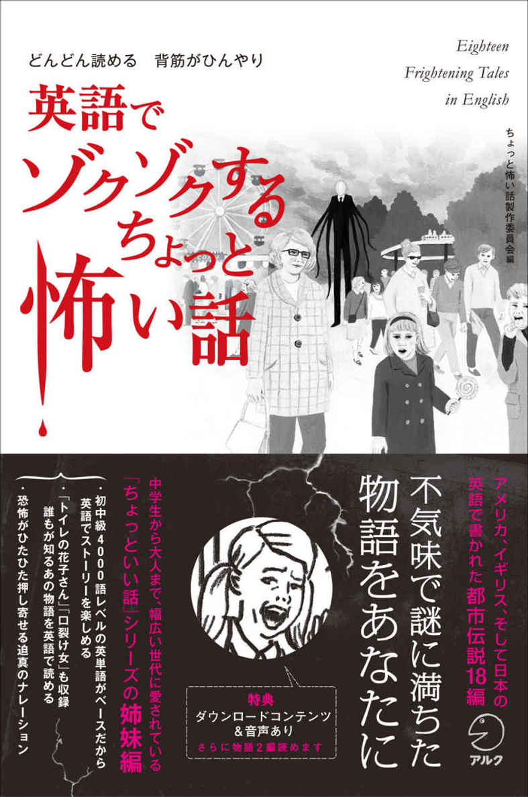
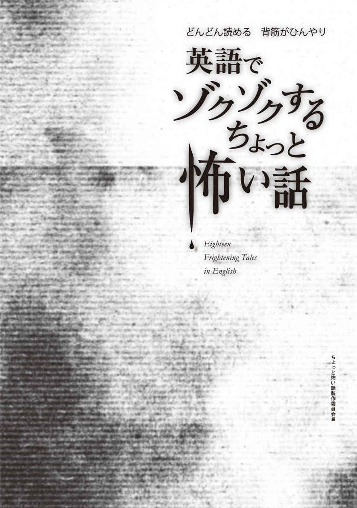
参照項目から元の箇所に戻るには、お使いのビューワーの仕様に従ってください。または一旦目次を表示し、戻りたい箇所の近くの見出しをタップして戻ってください。
Foreword
は じ め に
「興味深い内容で、最後まで読み通せるリーディング教材になかなか出合えない」、「英語の多読に興味はあるけれど、自分のレベルに合う本を見つけるのが難しい」──そんな悩みを解決するのが、本書『英語でゾクゾクする ちょっと怖い話』です。姉妹シリーズには、『英語で泣ける ちょっといい話』『英語で元気が出る ちょっといい話』『英語で心いやされる ちょっといい話』の3冊があります。
本書には、アメリカやイギリスで広く知られる都市伝説の物語16編に、日本の代表的な都市伝説である「花子さんを呼ぶノックは3回（トイレの花子さん）」と「口裂け女」を加え、合わせて18編を収録しています。先の展開が気になって、思わずページをめくりたくなること必至の物語を厳選しました。
それぞれのストーリーは、より読みやすくするために、アルクの「標準語彙水準12000」 （*SVL［Standard Vocabulary List］12000）に基づき、初中級4000語レベルの英単語を中心に用いて、リライトを行いました。やさしい単語と基本的な構文がベースになっているので、英語でダイレクトに恐怖を味わえます。また、少し難しめの単語や固有名詞には語注がついていて、スムーズに読み進めることができます。
無料でダウンロードできる音声には、物語本文の英文全てが収録されています。音読のお手本として、また、リスニング、リピーティング、シャドーイングなどを通じて、「聞く」「話す」力を伸ばす教材としてもご活用いただけます。さらにダウンロード特典をご利用いただくと、「ストーリーの背景」部分の音声に加え、本書未収録の物語2編もお楽しみいただけます。
収録した物語は、いずれも読めば誰かに話したくなるようなものばかり。本書を通じて、「英語でダイレクトに内容を理解できた喜び」「読み切った達成感」を感じていただき、多読へのモチベーションとしていただければ幸いです。
* 「標準語彙水準SVL12000」とは、日本人の英語学習者にとって有用な英単語1万2000語を選び出し、12のレベルに区分した語彙リストです。
アルク 英語出版編集部
ちょっと怖い話製作委員会
無料ダウンロード音声について
本書に対応するMP3音声は、すべて無料でダウンロードしていただけます。
音声ダウンロードの方法
※PC専用のサイトです。
まずはこちらへアクセス！
アルク ダウンロードセンター
http://www.alc.co.jp/dl/
（※2014年7月時点の情報。今後詳細が変更になる可能性があります）
① 「ダウンロードリスト」の「英語」の中から、「英語でゾクゾクする ちょっと怖い話 無料ダウンロード音声」をクリック。
② 申し込みフォームに必要事項をご記入の上送信。
③ メールで「ダウンロードページURL」の案内が届きます。
④ 届いたURLにアクセスして、圧縮ファイルをダウンロードしてください。
ダウンロード音声ファイルについて
圧縮ファイルを解凍ソフトで展開の上、iTunesなどの音声再生ソフトで取りこんでご利用ください。音声再生ソフトでのファイルの取り込み方法や携帯音楽プレーヤーでの利用方法については、ソフトやプレーヤーに付属するマニュアルでご確認ください。
音声ファイルは、音声再生ソフトで次のように表示されます。
出版社名（アーティスト名）：「ALC PRESS INC.」と表示
書名（アルバム名）：『英語でゾクゾクする ちょっと怖い話』
ダウンロードした音声のトラック名は
[Chapter01_01 Bloody Mary]
のように表示されます。本書の該当のトラック番号とトラック名を確認して再生し、学習してください。
ダウンロード特典について
本書ご購入の方限定のダウンロード特典をご用意いたしました。
ぜひ学習にご活用ください。
「ストーリーの背景」ダウンロード音声
本書掲載の「ストーリーの背景」の英文音声です。無料ダウンロード音声と併せてお楽しみください。
なお、本書では、ダウンロード音声ファイルについて、次のように表示しています。
トラック01の場合：DLMP3_01
「本書未収録のストーリー２点」ダウンロードテキスト＆音声
英文本文＋日本語訳（PDF形式）と英文音声（MP3形式）をダウンロードできます。もっと「ちょっと怖い話」を楽しめます。
◯Don't Look Back （振り返るな）
Don't Look Back_text.pdf（テキスト）
DLMP3_19_1（本文音声）
DLMP3_19_2（ストーリーの背景音声）
ジェイソンとソフィアは、遠方に住むジェイソンの両親を訪ねるために車を走らせていたが......。
◯The Mary Celeste （メアリー・セレスト号）
The Mary Celeste_text.pdf（テキスト）
DLMP3_20_1（本文音声）
DLMP3_20_2（ストーリーの背景音声）
1872年、ニューヨークからイタリアへ向かう航海に出たメアリー・セレスト号の運命は......。
ダウンロード方法
※PC専用のサイトです。
まずはこちらへアクセス！
アルク ダウンロードセンター
http://www.alc.co.jp/dl/
上記のサイトから「英語でゾクゾクする ちょっと怖い話」を選択し、申し込みフォームに必要事項を入力いただくと、メールにてダウンロード専用ページのご案内が届きます。
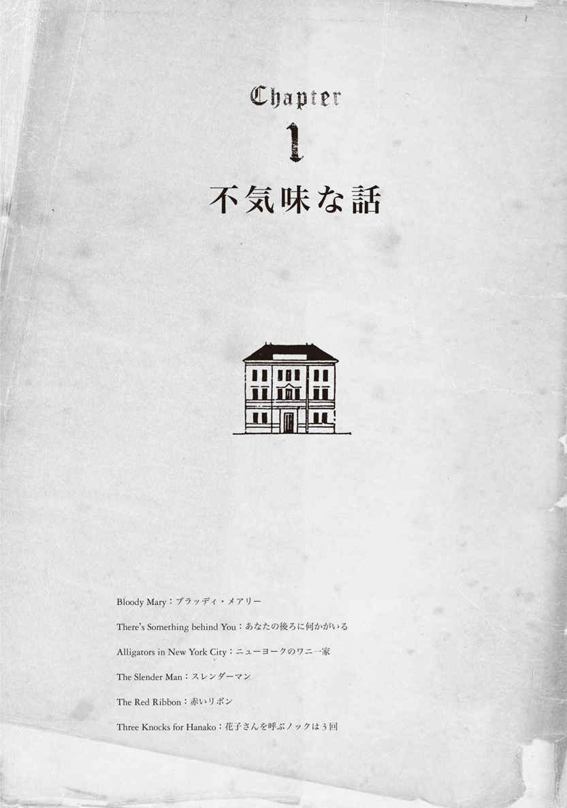
Bloody Mary
ブラッディ・メアリー
古い言い伝え
「ねえ、『ブラッディ・メアリー』にしなよ」。暇を持て余した夏の昼下がり、「真実か挑戦か」というゲームで、「挑戦」を選んだ「私」。それを選んだ者は、ゲーム参加者の命令に従わなければならないのだった。さて、「ブラッディ・メアリー」とは......。
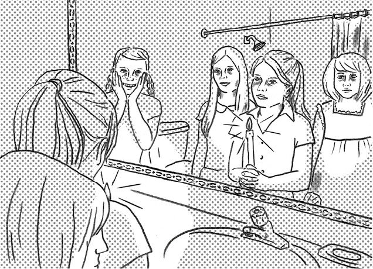
DLChapter01_01 Bloody Mary
How do you play the game Bloody Mary? What you need is a candle, some courage, and a*1 pitch-dark room with a large mirror. Light the candle and turn out the lights. Spin around three times in front of the mirror while slowly*2 chanting, "Bloody Mary, Bloody Mary, Bloody Mary." You can even add, "I stole your baby," if you dare! Anyway, then you look into the mirror and wait, and see what happens.
Some people who do this will see the pale face and glowing red eyes of Bloody Mary*3 staring out from the mirror. Some will*4 have their eyes*5 ripped out and their faces horribly*6 scarred. Others will*7 die a horrible death, with*8 claw marks all over their bodies. Others will have their souls ripped from their bodies by Bloody Mary and will be trapped in the mirror with Bloody Mary's ghost forever. Or so my friends told me.
It was a long summer afternoon, and we were playing*9 a game of Truth or Dare. It was my turn to pick, and I had taken Dare.
Somebody had said, "Hey, why don't you play Bloody Mary?"
I had kind of heard of Bloody Mary before, but I had never played it. It sounded kind of*10 creepy, but I didn't think it could possibly be real.
We all*11 piled into the upstairs bathroom, which was the only room in the house that we could make pitch-dark in the middle of the day. Somebody had brought in a candle and matches.
I lit the candle and stood right in front of the mirror. Someone turned out the lights. It was too late to back out now, although my hands suddenly felt cold and*12 clammy and I*13 was short of breath.
I turned slowly, holding the candle, and chanted, "Bloody Mary, Bloody Mary, Bloody Mary." I decided to skip the part about the baby.
After the third turn, I stopped and slowly opened one eye and*14 squinted into the mirror. Would there be glowing eyes in the mirror? Or, worse yet, a woman with long,*15 pointy fingernails standing right behind me, looking over my shoulder?
The candle went out. Everyone*16 gasped for a moment, all together, and then suddenly the candle flame leapt back. All of us laughed nervously. Someone*18 flicked the*17 overhead light back on.
We started back down into the family room, where it would be my turn to pick someone and ask them, "Truth or dare?"
We kept on playing for a while that afternoon, but nobody else dared pick "Dare."
423words
The background to "Bloody Mary"
DLMP3_01
The game Bloody Mary is very popular among young people --- particularly school-age and teenage girls --- in English-speaking countries. The "Mary" of the title is sometimes said to be Mary I of England, who*19executed hundreds of*20Protestants in the 16th century.
「ブラッディ・メアリー」のゲームはどうやるのかって？ 必要なものはね、ろうそくを1本、それと勇気。あと、大きな鏡のある真っ暗な部屋が要るわね。ろうそくに火をともして、明かりを消すのよ。「ブラッディ・メアリー、ブラッディ・メアリー、ブラッディ・メアリー」ってゆっくり唱えながら、鏡の前で3回くるくる回るの。「私はあなたの赤ちゃんを盗んだ」って加えちゃってもいいわ、言えるもんならね！ とにかくその後は鏡を見ながら待つのよ。それで、何が起こるか確かめるの。
鏡の中からにらみ付けるブラッディ・メアリーの、青白い顔とぎらぎら光る赤い目が見える人もいるわ。両目をくりぬかれて顔をひどく傷付けられる人もいれば、体中が引っかき傷だらけになって恐ろしい死に方をする人もいるらしい。ブラッディ・メアリーに体から魂を引き抜かれて、彼女の幽霊と一緒に永遠に鏡の中に閉じ込められてしまう人もいるのよ。友達からはそんなふうに聞いたわ。
退屈な夏の昼下がり、私たちは「真実か挑戦か」というゲームをしていたの。私の番が来たので、「挑戦」を選んだわ。
「ねえ、『ブラッディ・メアリー』にしなよ」って誰かが言ったの。
「ブラッディ・メアリー」のことは、前にちょっと聞いたことがあったけど、やったことは一度もなかった。何だか気味が悪そうだけど、そんなことあり得ないって思ってたわ。
私たちみんなで、上の階の浴室にぞろぞろ入っていったの。真っ昼間に暗くできるのは、家の中で浴室しかなかったから。誰かがろうそくとマッチを持ってきたわ。
私はろうそくに火をともして、鏡のすぐ前に立ったの。誰かが明かりを消した。突然両手が冷たくじっとりして、息苦しかったけど、もう後には引けなかった。
私はろうそくを持ったままゆっくり回って、唱えたの。「ブラッディ・メアリー、ブラッディ・メアリー、ブラッディ・メアリー」。赤ちゃんのところは言わないことにした。
3度回って止まり、ゆっくりと片方だけ薄目を開けて鏡を見たわ。ぎらぎらした目が映ってる？ それとも、もっと怖いけど、長くとがった爪の女が背後に立って、肩越しに私を見てるとか？
ろうそくの火が消えた。みんな一斉に、一瞬はっと息をのんだ。そしたら突然、また炎が燃え上がったの。みんな、ぎこちなく笑ったわ。誰かが天井の明かりのスイッチを、再びパチンと入れた。
私たちは階段を下りて居間に戻り始めたわ。部屋に戻ったら、私が誰かを選んで「真実か挑戦か」って尋ねる番だったしね。
その日の午後、しばらくの間遊び続けたけど、誰も「挑戦」を選ぼうとはしなかったわ。
「ブラッディ・メアリー」の背景
「ブラッディ・メアリー」は、英語圏の子どもたち、特に小学生やティーンエージャーの少女たちの間で非常に人気があるゲームです。タイトルの「メアリー」は、16世紀に何百人ものプロテスタントを処刑したイギリスの女王、メアリー１世を指すとも言われています。
There's Something behind You
あなたの後ろに何かがいる
20世紀半ば
ある女性が夜遅く一人で車を運転していると、後ろから1台の車がぴたりとついてくる。何とかその車から逃れようとする女性だが、ついに自宅まで追い掛けられてしまう。万事休すの彼女は......。
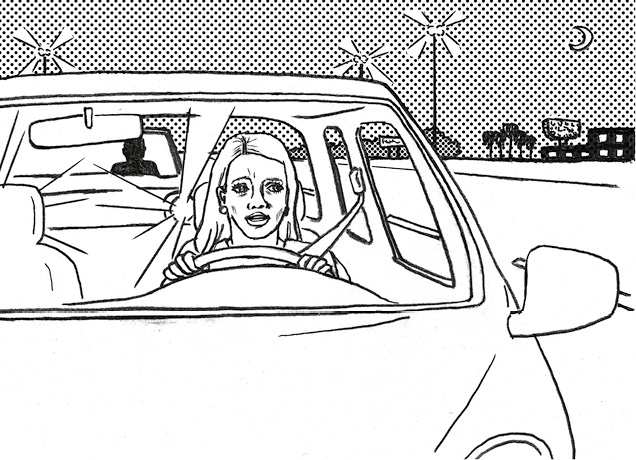
DLChapter01_02 There's Something behind You
One night, a young woman went out for dinner with her friends. It was getting late*1 by the time she got into her car and headed for her home outside*2 Phoenix.
She had just started along the*3 deserted*4 freeway when she noticed a pair of headlights behind her in the*5 rearview mirror. The car was going a little faster than she was. As it*6 pulled up behind her, its*7 turn signal came on. "Good, it's going to pass me." It began to*8 move out, when*9 all of a sudden, it pulled back behind her. It came dangerously close to her fender and flashed its bright headlights.
"What does he want?" she wondered. There was no one else around. She reached for her cellphone and then realized she had*10 accidentally left it at home that morning.
The lights of the car behind her*11 dimmed for a moment, then came on brighter than ever. The car*12 jerked toward her. She felt sure it would push her right off the road. Her hands gripped the*13 steering wheel tight. She tried to ignore the other car and keep her eyes on the road. Finally, the sign for her exit appeared. She waited until the last minute and then jerked the wheel to take the exit. She had hoped to lose the other car, but it was still right behind her, still flashing its bright lights.
Through the quiet streets toward her house, she drove as fast as she could, turning the corners quickly. No matter what she did, the car stayed right with her. She pulled into her own*14 driveway and leapt out to run into the house and call the police.
A man jumped out of the car behind her. He ran toward her, screaming, "Call*15 911! Go inside and lock the door!"
She*16 was bewildered. Why was this strange person who had been terrorizing her now telling her to go inside and call the police? But she rushed in and did as he had said, locking the door and calling 911.
When the police arrived, she learned that the man in the car behind her had actually been trying to save her.
As he pulled up behind her on the freeway, his lights showed the*17 profile of a man hiding in her back seat, holding an ax. Each time the man rose up and raised the ax over her head, the bright lights from the other car made him*18 crouch back down again.
The woman never got into the car again without first checking the back seat.
425words
The background to "There's Something behind You"
DLMP3_02
The United States is a car society, and there is no shortage of stories that*19terrify drivers. This*20urban legend is said to be inspired by a true incident that happened in New York State in the 1960s. It is a*21cautionary tale, with the message, "When you get in the car, always be sure to check the back seat."
ある夜、一人の若い女性が友達と食事に出掛けました。車に乗り込んでフェニックス郊外にある自宅に向けて出発するころには、夜遅くなっていました。
行き交う車のない高速道路を走り始めたところで、彼女はバックミラーに映る一組のヘッドライトに気付きました。その車は彼女の車より少し速いスピードで進んでいましたが、彼女の車の後ろでゆっくり減速するとウインカーを点滅させました。「良かった。私の車を追い越すんだわ」。その車は、彼女の車の横へとそれ始めたと思ったら、突如後ろに戻ってきました。彼女の車のフェンダーに危険なほど近づくと、まぶしいヘッドライトを点滅させたのです。
「この人は何をしたいのかしら？」と彼女は思いました。辺りには誰もいませんでした。携帯電話を手に取ろうとしましたが、今朝うっかり家に置いてきてしまったことに気付きました。
後ろの車のライトが一瞬暗くなり、それからいっそう明るくなりました。その車は彼女の車の方へ迫ってきました。彼女はその車が自分の車を道路から突き落とすつもりなのだと確信しました。彼女は両手でハンドルをしっかりと握り締めました。その車を無視して、道路に視線を向け続けようとしました。ようやく自分が降りる出口の標識が現れました。彼女はギリギリまで待って、出口から降りるため、急ハンドルを切りました。その車が見えなくなることを期待していましたが、車はまだ、まぶしいライトを点滅させながら、彼女のすぐ後ろにいました。
自宅に向かう閑散とした道路を思い切り飛ばし続け、角もすばやく曲がりましたが、何をしようとその車は彼女にぴたりとついてきました。彼女は自宅に続く私道に車を乗り入れ、家に駆け込んで警察に電話をしようと、車から飛び出しました。
後ろをついてきた車から一人の男が飛び降りてきました。男は「警察に電話しろ！ 中に入って、ドアに鍵を掛けるんだ！」と叫びながら、彼女の方へと駆け寄ってきました。
彼女は混乱しました。なぜ、自分を恐怖に陥れたこのおかしな男が、家に入って警察に電話しろなどと言っているのかしら？ ともあれ急いで中に入り、言われた通り、ドアに鍵を掛けて警察に電話しました。
警察が到着して、彼女は、後ろについてきた車の男が、実際には自分を助けようとしていたことを知りました。
その男性が高速道路で彼女の車の後ろに近づいたとき、斧を持って彼女の車の後部座席に隠れている男の姿が、ライトに照らし出されたのです。その男が立ち上がり、彼女の頭上に斧を振り上げるたびに、他の車からのまぶしいライトが男を再びかがみ込ませていたのでした。
女性は、それからというもの、必ず最初に後部座席を確認してから車に乗り込むようになりました。
「あなたの後ろに何かがいる」の背景
車社会のアメリカは、ドライバーを身震いさせるようなお話に事欠きません。この都市伝説は、1960年代にニューヨーク州で起きた実際の事件から生み出されたものと言われています。「車に乗るときには、必ず後部座席をチェックすること」というメッセージが込められた教訓的なお話です。
*1 by the time ...：...するときまで
*2 Phoenix：フェニックス。アメリカ・アリゾナ州の州都
*3 deserted：人けのない
*4 freeway：高速道路
*5 rearview mirror：（車などの）バックミラー
*6 pull up：（車が）速度を落としながら進む
*7 turn signal：方向指示器、ウインカー
*8 move out：（車が）追い越し車線へ出る
*9 all of a sudden：突然
*10 accidentally：偶然（に）
*11 dim：薄暗くなる
*12 jerk：（車などが）急に動く、動かす
*13 steering wheel：（車の）ハンドル
*14 driveway：（公道から車庫などに通じる）私道、私有道路
*15 911：アメリカの緊急通報用電話番号。日本の110番・119番に当たる。本書では、文脈により「警察」「911番」などと訳している
*16 be bewildered：混乱する、戸惑う
*17 profile：輪郭
*18 crouch：しゃがむ、うずくまる
*19 terrify：...をゾッとさせる
*20 urban legend：都市伝説
*21 cautionary：教訓的な、警戒的な
Alligators in New York City
ニューヨークのワニ一家
20世紀
旅先で、かわいい赤ちゃんワニを買ったジミー。彼の愛情を受け、ワニはすくすく育つが、これ以上家で飼い続けられないと判断した父親は、何とワニをトイレに流してしまう。数年後、ジミーの耳に驚きのニュースが飛び込んでくる......。
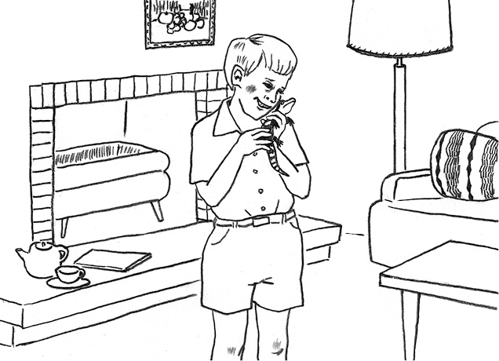
DLChapter01_03 Alligators in New York City
Jimmy went with his parents on a trip to Florida during his spring vacation. Just before starting the drive back up to New York City, they stopped at a*1 roadside stand that sold local*2 souvenirs. Jimmy's eyes were immediately drawn to the*3 rows of tiny baby*4 alligators in covered glass tanks. He said, "They're so cute. Can I get one, Mom? Can I?"
His mother said, "Well, you'll have to ask your father."
Jimmy's dad said, "It would make a nice souvenir, wouldn't it? All right, why not? Just be sure to keep his tank closed in the car. You don't want him to get lost."
When he got home, all of Jimmy's friends came over to see his new pet, which fit easily into the palm of his hand. Jimmy decided to call him Snappy. Every day, he fed his new friend some live*5 crickets, and soon Snappy grew to be almost as long as Jimmy's*6 forearm.
One evening after dinner, Jimmy's father came into his son's bedroom and said, "Son, I think your alligator is getting a little too big for our apartment." He lifted Snappy from his tank and carried him into the bathroom. He opened the toilet lid and held Snappy over the*7 bowl. Jimmy started crying. His dad dropped Snappy in, closed the lid and*8 flushed. "I'm sorry, son," he said.
A few years later, Jimmy and his parents were sitting in the living room, watching the news after dinner. The newscaster said, "And now for a piece of*9 scary local news. A city worker today reported seeing something unusual in the*10 sewers below our city. A family of alligators, including a father, mother, and two small babies. The worker said that the father alligator was about 4 or 5*11 feet long."
Jimmy looked at his father and mother, and they looked back at him. "Could it be? Snappy, alive and well in the sewers?" he wondered.
The newscaster went on to say, "The police believe that the alligators have been living in the sewers for several years, and that they may have originally been pets. Although no one is quite sure how they got into the sewers. The police warn that people should be careful around sewer*12 drains, especially after heavy rain."
*13 From that time on, Jimmy was careful to look into the toilet before ever sitting down,*14 in case Snappy's travels through the sewers should include a visit back to his old home. "I'm sure he remembers where we live," he thought. He almost expected to see, hidden there, a pair of pale green eyes and, of course, two rows of huge teeth.
440words
The background to "Alligators in New York City"
DLMP3_03
Every New Yorker --- probably every American --- knows this urban legend. It seems to have been inspired by an incident in 1935, when two young men captured a live alligator by pulling him up out of a manhole. It soon turned into a*15full-fledged urban legend that has*16generated many books and movies. According to scientists, it is not possible for alligators to live in sewers. However*17every now and then alligators are spotted on the streets of New York, for reasons that remain a mystery.
ジミーは、春休みに両親とフロリダへ旅行に行きました。ニューヨークへと車で帰路に就く直前に、家族は地元の土産物を売る道端の屋台に立ち寄りました。真っ先にジミーの視線を捉えたのは、ふたの付いたガラスの水槽に入った、小さな赤ちゃんワニたちの行列でした。ジミーは「かわいいなあ。1匹買ってもいい？ ママ。いいでしょ？」と言いました。
「そうねえ、お父さんに聞かないと」と母親は言いました。
ジミーの父親は「いい土産になるかもしれないね。よし、いいだろう。車の中では必ず水槽を閉めておくんだよ。ワニがどこかへ行ってしまったら嫌だろう」と言いました。
ジミーが家に戻ると、ジミーの友達みんなが新しいペットを見に来ました。ワニはジミーの手のひらにすんなり収まってしまうような大きさでした。ジミーは、ワニをスナッピーと呼ぶことにしました。ジミーが毎日、この新しい友達に生きたコオロギを与えると、スナッピーは程なくジミーの肘から手首ぐらいの長さに成長しました。
ある晩、夕食後に父親がジミーの寝室に来て言いました。「ジミー、お前のワニなんだが、うちのアパートで飼うにはちょっと大きくなり過ぎていると思うんだ」。父親はスナッピーを水槽から取り出し、浴室に運びました。父親はトイレのふたを開けると、スナッピーを便器の上へ持ち上げました。ジミーは泣き出しました。父親はスナッピーを便器の中へ落とし、ふたを閉めて水を流してしまいました。「すまない、ジミー」と父親は言いました。
数年後、ジミーと両親は夕食を終えて居間に座り、ニュースを見ていました。ニュースキャスターが言いました。「さて、続いてはこの地域の恐ろしいニュースです。本日、市の職員から、この街の下を流れる下水道で珍しいものを目撃したとの通報がありました。それはワニの一家で、父ワニ、母ワニと2匹の小さな赤ちゃんワニがいたということです。その職員によると、父ワニは体長が4、5フィートほどあったそうです」
ジミーは父親と母親を見つめました。二人もまたジミーを見つめ返しました。「ひょっとして？ スナッピー、下水道の中で元気に生きてるの？」とジミーは思いました。
ニュースキャスターは続けて言いました。「警察は、ワニはこの何年かは下水道の中で生きていて、もともとはペットだったかもしれないものとみています。ただ、どのようにしてワニが下水道に入ったのかについては、よく分かっていません。警察は、特に大雨の後、下水の排水溝の周辺では注意するよう呼び掛けています」
そのときからというもの、ジミーは腰を下ろす前に、常にトイレの中を注意深くのぞき込むようになりました。これは、万が一スナッピーが下水道の旅の途中で、懐かしい家にひょっこり戻ってきてしまった場合に備えてのことでした。「スナッピーは、僕たちがどこに住んでいるかきっと覚えているはずだ」とジミーは思いました。トイレの中に潜む二つの淡い緑色の目と、言うまでもなく、2列の巨大な歯が今にも見えそうな気がしたのでした。
「ニューヨークのワニ一家」の背景
ニューヨーカーのみならず、おそらくアメリカ人なら誰でも知っている都市伝説です。二人の若者がマンホールからワニを引っ張り出して生け捕ったという、1935年の出来事に触発されたようです。すぐに本格的な都市伝説となり、たくさんの小説や映画が生まれました。科学者によれば、下水道でワニが生息するのは不可能とのことです。しかし、ニューヨークでは路上でワニが見つかることが時折あり、その謎はいまだ解明されていません。
The Slender Man
スレンダーマン
2009年
やせっぽちで長身、常に黒ずくめのスレンダーマン。近年、アメリカ、ヨーロッパ、アジアの広い地域で目撃されているらしい。報告書から、その不気味な行為が次々と明らかになる......。
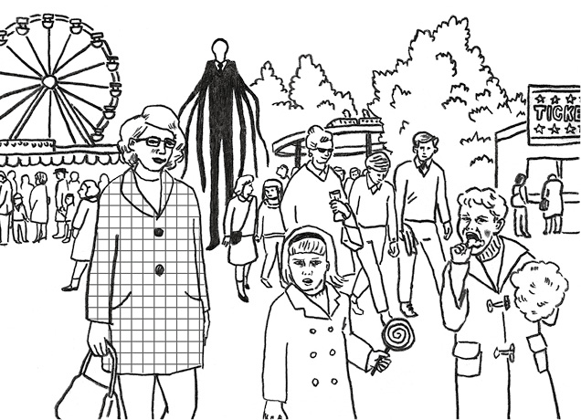
DLChapter01_04 The Slender Man
Recently, there have been*1 numerous sightings of a figure known as the Slender Man. The following is a report detailing the information known about him.
*2 Distinguishing features of the Slender Man:
*3 True to his name, he is very thin. He is also very tall. He*4 ranges in height from about 7 feet tall to the size of a large tree or house. He usually wears a black suit with a skinny, black tie and*5 polished,*6 gleaming black shoes.
He can stretch his arms and legs into all kinds of shapes. Sometimes, he has many arms, like an octopus.
The face of the Slender Man:
He has a pale face that is smooth and*7 featureless, like an egg. He doesn't have a nose, or eyes, or a mouth. Sometimes he wears a hat.
Where he has been sighted:
For several years now, there have been numerous sightings of the Slender Man on the Internet, particularly in the United States. Recently, he has also been sighted throughout Europe and Asia, with cases reported in Japan.
He likes to stay close to groups of people, so if you take a group photo in a park, you may see him*8 lurking somewhere in the background.
But don't get the idea that he's friendly.
Often, when he is seen in a photo, someone from the photo disappears soon afterward.
He is frequently seen at night*9 peering into open windows, and he sometimes steps out in front of cars on dark, deserted roads.
How the Slender Man kills:
He likes to*10 stalk his victims for a long time before he kills them. His methods of killing are unusual. Sometimes, he pulls out their*11 guts and hangs the bags of their blood from trees. In other cases, he has turned his victims into mist.
Occasionally, he lets his victims live but turns them into*12 zombie slaves who will do whatever he wants.
What to do*13 if you should see the Slender Man:
The Slender Man is not really human, so he can't be killed or captured. If you do see him, don't*14 bother calling the police because they won't be able to help.
It is said that if you see the Slender Man even once,*15 there is no way to escape him. Repeated sightings by the same individuals are common, because the Slender Man usually stalks his victims first and slowly*16 drives them insane.
The best thing is to try to avoid seeing him at all. For instance: If you visit a park with a group of friends, do not take any photos. When you are home at night, do not look out of the window.
Look over there, behind those trees. What's that shadow?
448words
The background to "The Slender Man"
DLMP3_04
"The Slender Man" is an urban legend that*17originated on the Internet. In 2009, someone posted pictures and a so-called*18eyewitness account on a website; it was actually a fictional creation, not based on a true story. From there the story began to spread, mainly in the United States. "The Slender Man" is very popular among young people, who have filled the Internet with stories, illustrations, videos, and games centered on him. This makes "The Slender Man" the first Internet urban legend, created through the active*19collaboration of people around the world.
スレンダーマンという名で知られるものの姿が最近、頻繁に目撃されています。以下は、スレンダーマンについて知られている情報を詳しく述べた報告書です。
スレンダーマンの目立った特徴：
その名の通りガリガリにやせていて、かなりの長身。その身長は、約7フィートから大きな木や家屋のサイズにまで及んでいる。たいてい黒いスーツに細い黒ネクタイを締め、ピカピカに磨き上げた黒い靴を履いている。
スレンダーマンは、腕や脚をあらゆる形に広げることができる。タコのように、何本も腕がある場合もある。
スレンダーマンの顔：
卵のようにツルツルしていて、のっぺらぼうの青白い顔。鼻も目も口もない。帽子をかぶっていることもある。
目撃場所：
ここ数年、インターネット上で、特にアメリカにおけるスレンダーマンの目撃情報が多数寄せられている。最近では、日本で報告された事例を含め、ヨーロッパやアジアのあらゆる地域でも目撃されている。
スレンダーマンは人間の集団の近くにいることを好むので、公園で集合写真を撮れば、背後のどこかに潜んでいるのが見えるかもしれない。
しかし、スレンダーマンがフレンドリーなどと思ってはいけない。
多くの場合、スレンダーマンが写真に写っていたら、その後間もなくして、写真の中の誰かが姿を消す。
夜、スレンダーマンが開いた窓から中をじっと見ているところを、たびたび目撃されている。また、暗く人けのない道路では、車の前に飛び出してくることもある。
スレンダーマンの殺害手口：
スレンダーマンは、殺害に及ぶ前に、狙った相手に長期にわたってしつこくつきまとうことを好む。殺害の方法は異常だ。時には、犠牲者の内臓を抜き取り、その血の袋を木につるす。犠牲者を霧に変えてしまったこともある。
たまに犠牲者を生かしておくことがあるが、スレンダーマンが望むことは何でもするゾンビの奴隷に変えてしまう。
万が一スレンダーマンを見てしまったらすべきこと：
スレンダーマンは人間ではないので、殺してしまうことも捕まえることもできない。本当にスレンダーマンを見てしまっても、わざわざ警察を呼ばないこと。警察は助けることができないのだから。
たとえ一度でもスレンダーマンを見てしまったら、逃れる方法はないと言われている。同じ人が何度もスレンダーマンを見るのもよくあることだ。というのも、スレンダーマンは、まず狙った相手に執拗につきまとい、徐々に発狂させるからだ。
一番いい方法は、とにかくスレンダーマンを見ないようにすることである。例えば、友達と集団で公園に行っても、写真は撮らないこと。夜、家にいるときは、窓から外を見ないこと。
あそこを見てごらんなさい、木の陰を。あの影は何？
「スレンダーマン」の背景
「スレンダーマン」は、インターネットから生まれた都市伝説です。2009年、あるウェブサイトに誰かが写真と目撃体験記と称する文を投稿しました。実はそれは架空の作り話で、事実に基づくものではなかったのです。そこから、物語がアメリカを中心として広がっていきました。「スレンダーマン」は若者の間で非常に人気があり、彼らが作った物語やイラスト、映像、ゲームがネット上にあふれています。それゆえ、「スレンダーマン」は、世界中の人が共同で自主的に作り上げた、初のインターネット都市伝説なのです。
The Red Ribbon
赤いリボン
古い言い伝え
ジェームズは幼なじみのキャサリンと結婚し、幸せに暮らしている。キャサリンは、子どものころから常に赤いリボンを首に巻いている。ジェームズは20回目の結婚記念日に、ある計画を実行する。キャサリンの赤いリボンの秘密とは......。
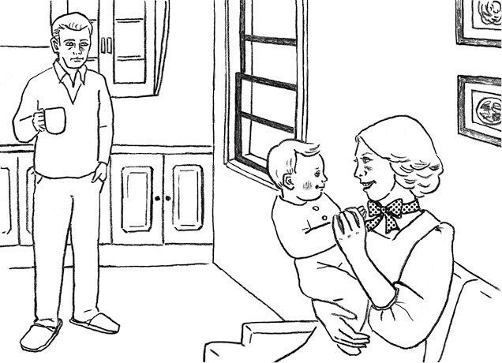
DLChapter01_05 The Red Ribbon
James touched the small*1 velvet box in his pocket. "Yes, the ring's still there," he thought. He was excited. He hoped Catherine would say yes.
He had known her ever since they were small children. She was beautiful and kind.
They sat down together on a park bench and then James*2 got down on one knee and asked her to marry him. "Yes," she said.
His eyes fell onto the red velvet ribbon she'd worn around her neck all these years. He had never seen her without it, even when they were kids.
"Could you tell me why you wear that red ribbon?" he asked.
"I must never take off my red ribbon," was all she said.
James*3 gazed at her, filled with love, and dropped the subject.
They were married that spring. They bought a*4 cozy little house and moved in. James bought her one beautiful dress after another, and she loved them, but she still wore the red velvet ribbon with each one.
A few years later, they learned that they would be having a baby. When the day to call the doctor finally arrived, Catherine said, "Please tell the doctor I must not take off my red ribbon."
The baby grew healthy and strong. He would sometimes reach for the red ribbon around his mother's neck. Each time, Catherine would gently take his hand in hers and say, "Mommy must never take off this red ribbon."
They had three more children, and they spent many happy years together. Their 20th anniversary arrived, and James decided to buy Catherine a beautiful diamond necklace. "Surely this will make her take off the ribbon," he thought.
But she simply placed the necklace directly over the ribbon and smiled at him. He began to get angry. "After all this time, doesn't she trust me?" he thought. That night he waited until she fell asleep.
Catherine lay there on her back, with her head resting on a large pillow. The necklace was back in its box, but the ribbon was still around her neck. James sat up, leaned over, and carefully*5 untied the ribbon. "There," he thought. "Now she's really mine."
She opened her eyes and looked up at him. A tear fell from her eye. She shifted slightly, and James watched in horror as her head fell off and rolled onto the floor.
"I warned you," the head said.
398words
The background to "The Red Ribbon"
DLMP3_05
This tale may also be told as "The Yellow Ribbon" or "The Velvet Ribbon." It was included in a famous anthology of short works for children, and many Americans seem to recall reading it during childhood. One theory holds that this story has its origin in the French Revolution, when women wore red ribbons around their necks as*6homage to those who had been executed by guillotine.
ジェームズは、ポケットの中の小さなビロードの箱に触れました。「よし、指輪はちゃんとある」と思いました。彼はドキドキしていました。キャサリンがイエスと言ってくれることを願っていたのです。
ジェームズは、二人が幼い子どもだったころからずっとキャサリンを知っていました。彼女は美しく優しい人でした。
二人は公園のベンチに並んで座りました。それから、ジェームズは片膝でひざまずき、キャサリンに結婚を申し込みました。彼女は「はい」と答えました。
彼は、彼女が長年ずっと首に巻いている、赤いビロードのリボンへ目を向けました。彼は、それを身に着けていない彼女を、子どものときでさえ見たことがありませんでした。
「どうして君がその赤いリボンを巻いているのか、教えてくれないか？」と彼は尋ねました。
「私は決してこのリボンを外してはいけないの」と彼女は答えるだけでした。
ジェームズは彼女をじっと見つめました。愛に満たされ、その話をするのをやめました。
二人はその春に結婚しました。そして、居心地の良いこぢんまりした家を買い、引っ越しました。ジェームズは彼女に次から次へと美しいドレスを買いました。彼女はどれも気に入りましたが、どのドレスを着ても赤いビロードのリボンを巻いたままでした。
数年がたち、二人に赤ちゃんが生まれることが分かりました。ついに医者を呼ぶ日がやってくると、「私が決して赤いリボンを外してはいけないこと、お医者様に伝えてね」とキャサリンは言いました。
赤ちゃんは健康で丈夫に育ちました。時には母親の首に巻いてある赤いリボンに手を伸ばそうとしましたが、そのたびにキャサリンは優しく赤ちゃんの手を握って言いました。「ママは絶対にこの赤いリボンを外しちゃだめなのよ」
二人にはさらに三人の子どもが生まれ、何年も幸せな時を共に過ごしました。二人の20回目の記念日を迎え、ジェームズはキャサリンに美しいダイヤのネックレスを買ってあげることにしました。「きっとこれで彼女はリボンを外すだろう」と彼は思いました。
しかし、キャサリンはリボンの上にじかにネックレスを着けただけで、ジェームズに微笑みかけるのでした。彼は怒りが込み上げてきました。「これだけ一緒にいるのに、彼女は私を信用していないのだろうか？」と彼は思いました。その晩、彼は彼女が寝入るのを待ちました。
キャサリンは、大きな枕に頭を乗せて仰向けに寝ていました。ネックレスは箱に戻されていましたが、リボンは彼女の首に巻かれたままでした。ジェームズは体を起こして身を乗り出し、慎重にリボンをほどきました。「さあ、これで彼女は本当に私のものだ」と彼は思いました。
キャサリンは目を開けてジェームズを見ました。彼女の目から涙がこぼれました。彼女がわずかに体を動かすと、頭が落ちて床に転がりました。ジェームズは恐れおののきながら見つめました。
頭が言いました。「だから言ったのに」
「赤いリボン」の背景
このお話は「黄色いリボン」や「ビロードのリボン」としても知られています。有名な児童向け短編集に収録されていたことから、アメリカでは子どものころに読んで、覚えている人も多いようです。フランス革命の際に、ギロチンによる斬首刑を受けた人たちに敬意を表して、女性たちが首に赤いリボンを巻いたことが物語の由来ではないかという説があります。
Three Knocks for Hanako
花子さんを呼ぶノックは3回
1970年代
「うちらの学校のトイレには、花子さんがいるらしいよ」。人けのなくなった放課後、トイレに行きたくなった葉月は、茜に頼んで一緒に行ってもらう。そして、葉月を待つ間に、茜は「あること」を試し始める......。
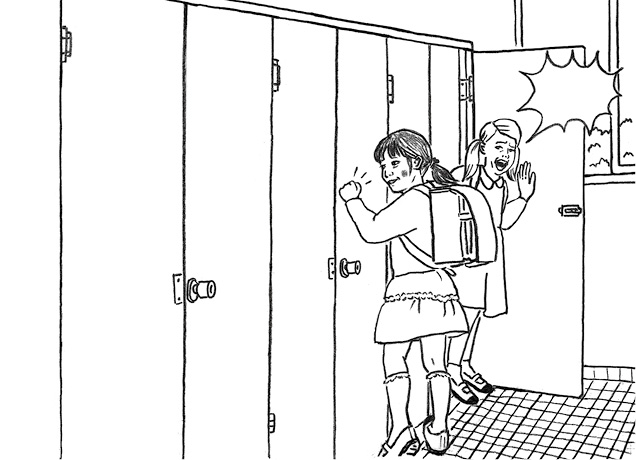
DLChapter01_06 Three Knocks for Hanako
Two fifth-grade girls, Hazuki and Akane, were*1 standing around in the classroom*2 chatting after the end of classes.
Hazuki said, "I guess it's time to go home. I really have to go to the bathroom, but the bathroom here is*3 way too dark and scary."
"You'd better go to the bathroom now," Akane said. "What would happen if you have to go on the way home?"
Hazuki said, "Yeah, but my older sister says 'Hanako' lives in our school bathroom."
Her friend said, "Huh? Hanako?"
"You don't know the story? In the girls' bathroom on the third floor ---our floor --- you knock three times on the door of each*4 stall, starting at the front and going toward the back, and ask if Hanako is in there. When you get to the last stall, you go back to the beginning and start over. When you've knocked on all the doors three times, Hanako will answer 'Yes.' "
"Really? And does she do anything to you?"
"Oh, yeah! She'll dash out of the third stall and drag you into the toilet, and you will never be seen again!"
"Come on, nobody believes that stuff. Don't worry."
"But I'm scared. Can you come with me?"
"OK, no problem," said Akane.
The girls lifted their*5 book bags onto their backs and left the classroom. The rays of the evening sun shone through the*6 corridor windows. Almost everyone was gone, and the school was quiet.
The girls arrived at the bathroom and went in. Hazuki picked the last stall down, which was the fourth. Akane waited near the door at first but then suddenly got the idea of trying an experiment. She'd knock on the doors and see what happened.
Knock, knock, knock. She tried the first door. "Are you there, Hanako?" She was met with complete silence.
"What are you doing, Akane?*7 Knock it off!" Hazuki called out.
"Don't worry. I'm just fooling around," said Akane. She continued*8 down the line, knocking three times on each of the doors and calling, "Are you there, Hanako?" Nothing bad happened.
"Well, I'm going for the second round," Akane said. She walked back to the first stall and began again, knocking three times on each door and calling, "Are you there, Hanako?" There was no answer.
"I'm telling you,*9 cut it out! I'll be out in a second," Hazuki said nervously.
"OK, OK,*10 whatever," Akane answered. She started in again, knocking three times on each door*11 in succession. She had just finished knocking on the doors for the third time when Hazuki came out of the last stall.
"Stop it!" Hazuki said, just as Akane said, "Are you there, Hanako?"
There was a pause, and then a quiet voice said, "Ye-e-e-e-e-e-s." The voice was coming from inside the third stall, whose door began slowly to*12 creak open.
Inside stood a small girl, a few years younger than them, wearing a red skirt, her hair cut in a shoulder-length bob. Suddenly the girl's eyes seemed to flash, then she*13 lunged forward and*14 grabbed Akane by the left wrist. Hazuki held onto Akane's shoulder and threw her other arm around her friend's waist. But the girl in the bathroom stall started to pull Akane toward her, with a strength that was unimaginable for such a small girl. Slowly, Akane and Hazuki were being dragged into the stall. They were halfway in when they suddenly heard a voice.
"Hello-o-o-o! Is anyone still in there?"
The voice belonged to Mr. Yamamoto, one of their teachers.
"Yes," they cried out! "We're in here!"
The*15 tremendous strength that had been gripping Akane's wrist suddenly dropped off completely, and the girls both fell backward with a crash.
Mr. Yamamoto stuck his head in the bathroom. "Are you guys OK? What are you doing on the floor?"
"Oh, um, we just came out of the stalls at the same time, and we crashed into each other. We're so*16 clumsy. Ha-ha."
"OK, well, it's getting late. Get home safely now."
"We will. Thanks, Mr. Yamamoto."
The two girls rushed down the hall, flew down the stairs, and ran through the school gate.
Once they were through the gate, they paused to catch their breath. Akane grabbed her friend's hand and said, "I'm sorry, Hazuki. You were right. She's real after all."
Hazuki said, "Look!" and gazed down at Akane's wrist. They could still see the*17 angry red marks left by Hanako.
734words
The background to "Three Knocks for Hanako"
DLMP3_06
There are many Japanese urban legends featuring school bathrooms, but the one that has probably*18horrified children the most is the story of Hanako. Some people say that Hanako died at school during a World War Ⅱ*19air raid, while others say she died while*20cowering in a stall, hiding from an*21abusive parent. Hanako's story led many Japanese children to refuse to enter a school bathroom alone. Through*22film adaptations, Hanako eventually became known to American children.
小学5年生の女の子、葉月と茜の二人は、放課後、何となく教室でおしゃべりをしていました。
葉月が言いました。「そろそろ家に帰らないと。本当はトイレに行かなきゃなんだけど、学校のトイレ、すっごく暗くて、怖いんだよね」
「今、行っておいた方がいいんじゃないの？ 家に帰る途中で行きたくなったらどうすんのよ？」と茜は言いました。
「そうなんだけどさ、お姉ちゃんが言うんだもん。うちらの学校のトイレには『花子さん』がいるんだよって」と葉月が言いました。
「え？ 花子さん？」と茜が尋ねました。
「この話、知らないの？ 3階の女子トイレの------この階だよ------個室のドアを3回ずつたたくの。手前のドアから奥に向かって順番にね。で、花子さんが中にいるか聞くの。一番奥のドアまで行ったらまた始めに戻って繰り返すの。全部のドアをたたいて3周すると、花子さんが『はあい』って答えるんだって」
「本当？ それで花子さんは何かしてくるの？」
「そうだよ！ 花子さんが3番目の個室から飛び出してくるんだよ。それで、花子さんにトイレの中へ引きずり込まれると、二度と戻れなくなっちゃうんだから！」
「うっそー、そんなの信じる人いないよ。大丈夫だって」
「だって、怖いんだもん。一緒に来てくれない？」
「うん、いいよ」と茜は言いました。
二人はランドセルを背負って教室を出ました。夕日が廊下の窓から差し込んでいました。ほとんどの子は帰ってしまい、校内はしんとしていました。
二人はトイレに着き、中に入りました。葉月は一番奥の個室を選びました。それは手前から4番目でした。茜は最初、そのドアの近くで待っていましたが、突然、あることをしてみようと思い付きました。ドアをたたいたら何が起こるのか、見てやろうと思ったのです。
トン、トン、トン。茜は1番目のドアをたたいてみました。「花子さんいらっしゃいますか？」。物音一つしませんでした。
「茜、何やってるの？ やめてよ！」と葉月は叫びました。
「大丈夫。遊んでるだけー」と茜は答えました。彼女はドアを順番に3回ずつたたいては、「花子さんいらっしゃいますか？」と声を掛けていきました。悪いことは何も起こりませんでした。
「じゃあ、2周目に入るね」と茜は言いました。最初の個室まで戻り、また最初からドアを3回ずつたたき、「花子さんいらっしゃいますか？」と呼び掛けました。返事はありませんでした。
「やめてって言ってるじゃん！ すぐに出るから」と葉月はイライラしながら言いました。
「はい、はい、もう分かったから」と茜は答えました。彼女はもう一度、ドアを3回ずつ立て続けにたたきました。3周目のドアをちょうどたたき終えたとき、葉月が一番奥の個室から出てきました。
「やめてってば！」という葉月の言葉と同時に、茜は言いました。「花子さんいらっしゃいますか？」
一瞬の間の後、小さな声がしました。「はーあーい」。声は3番目の個室からで、そのドアがギーッという音を立てながらゆっくりと開き始めました。
中には、二人より2、3歳下の小さな女の子が立っていました。赤いスカートをはいて、髪は肩までの長さのおかっぱ頭でした。突然、その子の目がパッと光ったように見えたかと思うと、女の子は前に飛び出してきて、茜の左手首をつかみました。葉月は茜の肩をしっかりつかんで、もう一方の腕を茜の腰に回しました。しかし女の子は、小さな子のものとは思えない力で、茜を自分の方へ引っ張り始めました。茜と葉月はじりじりと個室の中へと引きずり込まれていきました。二人が半ば個室の中に引きずり込まれたところで、突然、声が聞こえました。
「おーーーい！ まだ誰か中にいるかー？」
声の主は山本先生で、二人が教わっている先生の一人でした。
「はい！」。二人は声を張り上げました。「ここにいます！」
茜の手首をしっかりつかんでいた、あのとてつもない力は急に消え失せ、二人ともドスンと音を立てて後ろに倒れました。
山本先生はトイレに顔をのぞかせました。「お前たち大丈夫か？床の上で何してるんだ？」
「あの、えっと、同時にトイレから出てきて、ぶつかっちゃったんです。どんくさいですよね。あはは」
「何だ、そうか。もう遅いぞ。さあ、気を付けて帰りなさい」
「そうします。ありがとうございます、山本先生」
二人は廊下を駆け出し、階段を飛ぶように下りて、校門を走り抜けました。
門を抜けると、やっと立ち止まって一息つきました。茜は葉月の手を握り締めて言いました。「ごめんね、葉月。葉月の言う通りだった。やっぱり花子さんは本当にいるんだね」
「見て！」と葉月は言って、茜の手首をじっと見下ろしました。花子さんがつけた腫れ上がった赤いあざが、二人にはまだ見えたのでした。
「花子さんを呼ぶノックは３回」の背景
学校のトイレにまつわる日本の都市伝説は数あれど、おそらく子どもたちを最も怖がらせているのが、花子さんのお話でしょう。花子さんは、第二次世界大戦の空襲に遭い、学校で亡くなったとも、虐待する親から逃れてトイレでうずくまっているうちに亡くなったとも言われています。花子さんのお話のせいで、一人で学校のトイレに行けない日本の子どもが続出しました。映画化を通じて、花子さんはついにアメリカの子どもたちにも知られるようになりました。
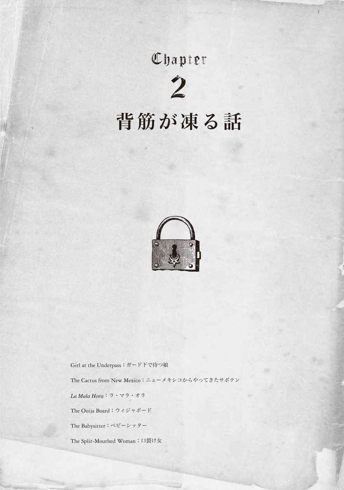
Girl at the Underpass
ガード下で待つ娘
20世紀
ある雨の夜更け、週末を実家で過ごすために車を走らせるダニー。ジェームズタウンのガード下に差し掛かったとき、道路脇にたたずむ若い女性が目に入る。女性に呼び止められたダニーは、取りあえず彼女を家まで送っていくことにするが......。
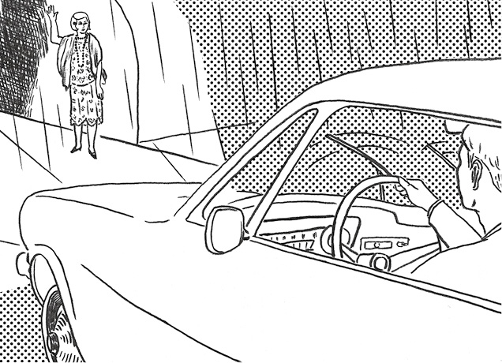
DLChapter02_01 Girl at the Underpass
It was the spring of 1965. Danny was driving home from college for the weekend. It was late at night, and rain had started to fall. It was not a long drive from his college in*1 Greensboro, North Carolina, to his parents' home in*2 Lexington, but he was very tired. He*3 rubbed at his eyes and*4 blinked, struggling to see the*5 poorly lit road clearly. He couldn't wait to eat some of his mom's home cooking.
Just as he approached the Jamestown*6 underpass, he saw in the distance the figure of a young woman standing by the side of the road. It seemed strange; there was no car in sight, just the young woman standing alone in the dark. She was waving at him to stop. He slowed to a stop and rolled down the window.
He could see now that she was wearing a lacy,*7 pale-colored dress. It looked kind of old-fashioned.
"Do you need some help?" he asked. "Yes," the young woman answered. "I'm trying to get home from*8 the dance, and I know my mom will be worried."
"Where do you live?" he asked.
"High Point," she said. "*9 Do you think you could give me a ride? "
"Sure," he said. "*10 Hop in." He didn't want to ask her any more about what had happened at the dance. Perhaps her boyfriend had left her there all alone on the road. She had*11 apparently had a difficult night already, so he just chatted about the weather with her until they reached High Point.
"Turn here," she said, as they entered one of the older, more*12 run-down parts of town. "My house is right over there. The one on the corner."
He pulled slowly up the unpaved driveway. The house was very dark. "Strange," he thought, "her mother isn't waiting for her to come home." He stopped the car and went around to open the girl's door. When he looked in, she was gone.
"She didn't even say goodbye, or thank you," he thought, "and I didn't hear a thing. How did she get out of the car?"
He decided to go to the door and check that she was home safe. He knocked, and after a moment an old lady opened the door.
"Sorry, ma'am, I know it's late. I brought a girl to this house just now," he explained, "and I can't find her. Have you seen her? She was standing by the side of the road, and I'd picked her up."
"Where was this?" the woman asked.
"Right by the Jamestown underpass."
"Yes, that's my daughter. She was in a car crash right by the underpass 20 years ago. There were no*13 survivors. Ever since then, once a year on the anniversary of the crash, she finds a nice young man like yourself to pick her up. All this time has gone by, and she's still trying to get home."
483words
The background to "Girl at the Underpass"
DLMP3_07
This is a well-known urban legend from North Carolina. In the local area where the story originated, the ghost of a young woman named Lydia, who died in a car crash in 1923, is said to have been seen many times by local residents. At summer events with Boy Scouts or classmates, kids often like to gather around a campfire at night and tell scary stories. This is one of the standards.
1965年の春のことでした。ダニーは週末を実家で過ごすため、大学から実家に向かって車を走らせていました。夜も更け、雨が降り始めていました。ノースカロライナ州グリーンズボロにある大学からレキシントンの実家までは、長時間のドライブではありませんでしたが、彼はとても疲れていました。目をこすってはしばたたかせ、薄暗い夜道に目を凝らしていました。ダニーは母の手料理を食べるのが待ち遠しくてたまりませんでした。
ちょうどジェームズタウンのガード下に差し掛かったところで、遠くの方に道路脇に立っている若い女性の姿が見えました。奇妙に思えました。車は1台も見当たらず、暗がりにその若い女性だけが一人で立っていたのですから。彼女は車を止めようと、ダニーに手を振っていました。彼はスピードを落として車を止め、窓を開けました。
そのときダニーは、彼女が淡い色をしたレースのドレスを着ているのに気が付きました。そのドレスは少し時代遅れに見えました。
「何かお困りですか？」と彼が尋ねると、「はい」と若い女性は答えました。「ダンスパーティーから家に帰ろうとしているんです。母が心配するだろうなと思って」
「お住まいはどちらですか？」とダニーは尋ねました。
「ハイポイントです」と彼女は答えました。「乗せていただけますか？」
「いいですよ」と彼は言いました。「乗ってください」。彼はダンスパーティーで何があったのか、それ以上尋ねようとは思いませんでした。おそらくボーイフレンドに、一人ぼっちで道路に置いてきぼりにされてしまったのでしょう。どうやら彼女は、すでにつらい夜を過ごしていたようだったので、ハイポイントに着くまでは天気について話すぐらいにしました。
「ここで曲がってください」。車が町の一層古びて荒廃した辺りに差し掛かったとき、彼女が言いました。「私の家はすぐそこです。あの角の家です」
ダニーは、舗装されていない私道にゆっくりと車を進めました。家は真っ暗でした。「変だな」と彼は思いました。「母親は娘の帰りを待ってなんかいないじゃないか」。彼は車を止め、ドアを開けてあげようと、彼女が乗っている側に回りました。中をのぞくと、彼女の姿はありませんでした。
「彼女はさよならも、ありがとうも言わなかったな」と彼は思いました。「それに何の音も聞こえなかった。どうやって車から降りたんだ？」
ダニーはその家の玄関まで行って、彼女が無事に帰宅したか確かめることにしました。ドアをたたくと、程なくして年配の女性がドアを開けました。
「夜分遅くにすみません、奥さん。つい今しがた、娘さんをこの家まで送ってきたんです」と彼は説明しました。「でも彼女がいないんです。彼女を見ましたか？ 道路脇に立っていたので、僕が車に乗せたんです」
「どこでですか？」と女性は尋ねました。
「ジェームズタウンのガード下のすぐそばです」
「そう、それならうちの娘ですわ。娘は20年前、そのガード下のすぐそばで車の衝突事故に遭ったのです。助かった人はいませんでした。それからというもの、年に一度事故が起きた日に、娘はあなたのような親切で若い男性を見つけて車に乗せてもらうのです。一切は過ぎていくというのに、あの子はいまだに家に帰ろうとしているのです」
「ガード下で待つ娘」の背景
ノースカロライナ州の有名な都市伝説です。現地では、1923年に交通事故で亡くなったリディアという若い女性の霊が、地域住民たちに何度も目撃されているそうです。ボーイスカウトや学校の夏の行事では、子どもたちが夜にキャンプファイアを囲んで、怖い話をすることがよくあります。このお話は、そういったときの定番の一つとなっています。
The Cactus from New Mexico
ニューメキシコからやってきたサボテン
1980年代
「なんて見事なサボテンなの！」。マーシャは大のサボテン好き。夫とのニューメキシコでのドライブ中に、1本のサボテンに心を奪われ、家に持ち帰ってしまう。何が彼女を待ち受けているかも知らずに......。
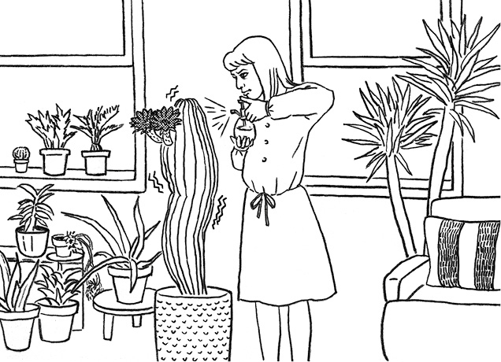
DLChapter02_02 The Cactus from New Mexico
Marcia and Phil, a young couple from Oklahoma, drove west to New Mexico for a vacation. On the way back, they saw a perfectly shaped, beautiful, 4-foot-tall, blossoming*1 cactus growing inside a state park just off the*2 highway. They loved plants very much and had a*3 flourishing collection of*4 potted plants at home. Marcia in particular loved cactuses.
"You know it's against the law to take it," Phil said.
"I know," Marcia replied. "But I've never seen such a wonderful cactus. Look at those deep red flowers."
They*5 managed to dig it up, and then they wrapped it in a blanket and set it carefully in the trunk.
When they got home, Marcia set to work right away to pot the plant. She had just the right size pot in the garage, and indeed, the cactus looked very impressive in the living room.
One day, when she was watering the*6 rest of her plants, she decided to give the cactus a gentle misting from her spray bottle. When she did, she noticed that the cactus seemed to*7 shiver all along its length, almost like a cat being*8 petted.
"That's odd," she thought. So she spritzed the plant again. Again, it*9 trembled. It definitely moved, she thought. She had never seen a cactus do that.
So the next day she decided to make a phone call to a local*10 exotic plant shop to ask for advice about whether something might be wrong with it.
She told the shop owner that she had bought the cactus in New Mexico. When she described the way that the plant had trembled, the person*11 on the other end of the phone asked her, "Ma'am, are you alone in the house? Where is your family?" Marcia thought that it was a very strange question, but she said that her husband was at work.
"Good," came the response. "You need to get outside right away. I'm calling 911. What is your address?"
Ten minutes or so later, her street was filled with fire trucks, police cars, and an ambulance, as well as a van from the local plant shop. "Where is this plant, exactly?" the man from the plant shop asked. He headed to the house with the fire chief.
The two walked toward the house and peered in the window. Marcia saw their eyes grow bigger, as if shocked at what they saw. She joined them at the window and looked inside.
As they all watched, the cactus swelled and swelled. Soon it had nearly doubled in width. Small cracks began to show in the surface. The cracks kept getting bigger until suddenly, with a popping sound, the plant exploded and*12 spewed out thousands of tiny black creatures.
The cactus she had dug up in New Mexico had contained*13 tarantulas that had been living inside it for some time. The "trembling" motion Marcia had noticed was from thousands of eggs beginning to*14 hatch.
She needed to make one more call right away. Not to 911 this time, but to an*15 exterminator.
And after that, every night in her dreams, she saw all of her beloved cactuses covered in tiny,*16 furry spiders.
One night she woke up and said to Phil, "That's it, I've got to*17 get rid of all the cactuses." She threw on some clothes, got a giant sack and tossed in all the other cactuses, tied it shut, and set it at the*18 curb.
She went back to bed, but still any gentle breeze felt like the first*19 tentative touch of a spider's outstretched leg.
591words
The background to "The Cactus from New Mexico"
DLMP3_08
This urban legend got its start in the 1980s. Its*20underlying message is that things that are exotic and beautiful may carry hidden danger. Since it is not possible for tarantula eggs to*21incubate and then hatch inside a cactus, the story*22qualifies as an urban legend.
オクラホマ在住の若夫婦、マーシャとフィルは休暇を利用して、西のニューメキシコ方面へとドライブしました。その帰り道、二人は幹線道路から少し外れた州立公園に生えている、完璧な形をした、4フィートの高さの、花の咲いた美しいサボテンを目にしました。二人は植物がとても好きで、自宅には膨大な鉢植えコレクションがありました。マーシャは特にサボテンが大好きでした。
「それを持ち帰ったら法に触れるの、分かってるよね」とフィルが言いました。
「分かってる」とマーシャは答えました。「でも、こんなに見事なサボテン、見たことないんだもの。見てよ、あの深紅の花」
二人は何とかサボテンを掘り起こしました。そして毛布でくるんで、トランクの中に注意深く固定しました。
家に着くと、すぐにマーシャはサボテンを鉢に植える作業に取り掛かりました。ガレージにちょうどいい大きさの鉢がありました。確かにリビングに置かれたサボテンは、実に見事なものでした。
ある日、マーシャは他の鉢植えに水をあげながら、あのサボテンに霧吹きでそっと水を吹き掛けてあげようと思いました。水を吹き掛けたとき、マーシャは気付きました。サボテンが全身を震わせたかのように見えたのです。まるで、なでられているネコかのように。
「変ね」と彼女は思いました。そしてもう一度、サボテンに水を吹き掛けました。サボテンはまた震えました。確かに動いた、と彼女は思いました。彼女は今まで、サボテンがそんなふうに動くのを、見たことなどありませんでした。
そこで、彼女は次の日、サボテンに何か問題があるのか相談するため、珍しい植物を扱う地元の園芸店に電話することにしました。
彼女は店のオーナーに、そのサボテンはニューメキシコで買ったのだと話しました。サボテンがどういうふうに震えたかを説明すると、電話の向こう側で相手が尋ねました。「奥さん、家にお一人ですか？ ご家族はどちらに？」。マーシャには非常に奇妙な質問に思えましたが、夫は仕事に出ていると答えました。
「それなら良かった」と答えが返ってきました。「すぐ外に出ないと。私が911番に電話しますから。お宅の住所は？」
10分かそこらで、彼女の家の前の通りは消防車やパトカーや救急車でいっぱいになりました。もちろん、先ほどの地元の園芸店のトラックもありました。「そのサボテンはどこですか？ 正確にお願いします」と園芸店の男性は聞きました。男性は消防署長とともに家に向かいました。
二人は家まで歩いていき、窓から中に目を凝らしました。マーシャは二人の目が大きく見開くのを見ました。まるで目に映ったものにショックを受けているかのようでした。彼女も窓際の二人に加わり、家の中を見ました。
彼らが見つめる間に、サボテンはみるみる膨らみ、すぐに倍近くの太さになりました。表面に小さなひび割れが出始めました。ひび割れはどんどん大きくなり続け、サボテンは突然パンという音とともに破裂すると、何千もの小さな黒い生き物を吐き出したのです。
マーシャがニューメキシコで掘ってきたサボテンの中には、タランチュラがいました。しばらくの間、サボテンの中に住み着いていたのです。彼女が気付いたあの「震える」動きは、何千もの卵がふ化し始めたことによるものだったのです。
マーシャはすぐにもう1本電話をする必要がありました。今度は911番ではなく、害虫駆除業者に。
それ以来彼女は、自分の大切なサボテンが全て毛むくじゃらの小さいクモまみれになっている夢を毎晩見てしまうのでした。
ある晩、マーシャは起き上がってフィルに言いました。「そうだわ、サボテンを全部処分するのよ」。彼女は急いで服を羽織ると、大きな袋を取り出して、残りのサボテンを全て放り込んでしまいました。そして、袋の口を結んで道路のへりに置きました。
マーシャはベッドに戻りました。しかし、どんな優しいそよ風も、1匹のクモが脚を伸ばして、初めておずおずと触れる感触のように思えてならないのでした。
「ニューメキシコからやってきたサボテン」の背景
この都市伝説は1980年代に出現したものです。「魅惑的で美しいものにはどんな危険が潜んでいるか分からない」というメッセージが根底にあります。ただ、タランチュラの卵がサボテンの中に宿ってふ化することはあり得ませんので、その点でこのお話は都市伝説と言えるでしょう。
*1 cactus：サボテン。複数形はcuctusesまたはcacti
*2 highway：主要道路。本書では、文脈により「幹線道路」「高速道路」などと訳している
*3 flourishing：盛大な、おい茂る
*4 pot：鉢に植える
*5 manage to ...：何とか...する
*6 rest of ...：他の...
*7 shiver：震える
*8 pet：...をなでる
*9 tremble：震える
*10 exotic：外来の、珍しい、魅力的な
*11 on the other end of the phone：電話の向こうで
*12 spew：...を噴出する、吐き出す
*13 tarantula：タランチュラ（毒グモの一種）
*14 hatch：ふ化する
*15 exterminator：害虫駆除業者
*16 furry：毛で覆われた
*17 get rid of ...：...を処分する
*18 curb：縁石
*19 tentative：試験的な、ためらいがちな
*20 underlying：潜在する
*21 incubate：潜伏する
*22 qualify as ...：...と見なす
La Mala Hora
ラ・マラ・オラ
20世紀
ある夜、「私」は親友から彼女の夫が出ていったとの電話をもらう。つらい思いをしている親友を支えるべく、出張中の夫の同意を得て、彼女の家へと車を走らせる「私」。しかしその道中、信じ難いものを目にしてしまう......。
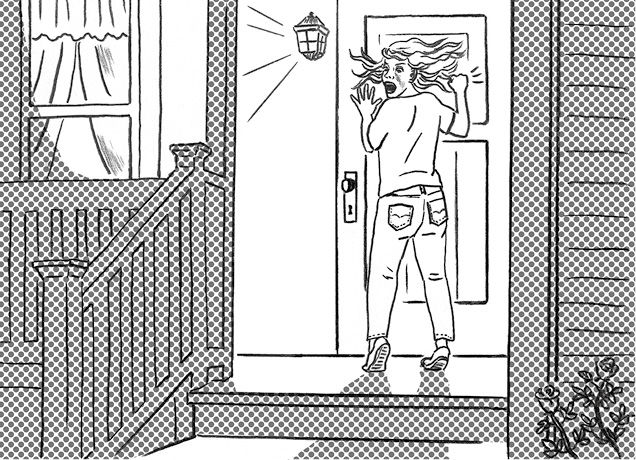
DLChapter02_03 La Mala Hora
I had just gotten home from work that Friday night when my best friend, Olivia, called. She was crying so hard that I couldn't figure out at first what she was saying. Then I realized she was saying her husband Frank had*1 moved out.
I called my husband, James, who was on a business trip to San Francisco. He agreed I should go see her for a few days, to*2 help her through this difficult time. So I packed a small*3 overnight bag. It would be a drive of about 4 hours to*4 Albuquerque, and I wanted to get there by about midnight.
I finally got off the highway and started down the side roads that led to Olivia's house. I was approaching a small*5 crossroads when a woman suddenly ran out into the street in front of my car. I screamed and*6 jammed on my brakes, hoping I wouldn't hit her.
The car*7 screeched to a stop, and I looked all around. Then I saw her, standing right next to my window, staring in at me. She had a face like a demon, with eyes glowing red. Her mouth was moving, and I could see her teeth were as sharp as*8 fangs. She began to*9 claw and*10 pound at my window, and I was pretty sure she was going to break the glass.
I*11 slammed my foot down on the*12 gas and the car jerked forward. I was shocked to see the woman running*13 alongside, keeping up easily and even slamming her fist against the window every few seconds. I kept my foot on the gas, and eventually, I started to*14 pull ahead.
Soon I was at Olivia's house, and I ran up to her front door, pounding*15 frantically and looking back toward the street. Olivia came running and opened the door to let me in.
"Shut it!" I screamed. "Shut it quick!" I raced past her into the safety of the house.
"What's the matter?" she asked, looking out into the front yard and then*16 slamming and locking the door. She grabbed my hand and led me toward the kitchen table and poured me a glass of red wine. I sat down and took*17 a few sips. A couple of minutes later, I was able to tell her what had happened. Olivia gasped and said, "Are you sure it was at a crossroads that you first saw her?"
I nodded, puzzled. "Yes, but what does that have to do with it?"
She looked worried. "It must have beenLa Mala Hora. It means 'the bad hour.' Oh, this is bad, honey," Olivia said. "La Mala Hora only appears at a crossroads when someone is going to die."
*18 Ordinarily, I would have*19 scoffed, but still shocked at how fast the woman had run and how she had looked, I wasn't sure just what to think. Olivia went out to get my bag and sent me off to bed.
I woke up wondering if maybe it had been a bad dream, but Olivia's look of concern told me*20 otherwise. I began to get a panicked feeling that only increased*21 as the day went on. I told Olivia I needed to get back home and calm down. She insisted on going with me. I told her I'd leave the next morning, because there was no way I was going to drive back in the dark past that same crossroads.
On Sunday we left soon after the sun came up. We had just made it home and were having some coffee when a police car pulled up and two officers got out. I looked out at them with a feeling of cold*22 dread and made Olivia*23 answer the door. The look on her face as she walked back into the kitchen told me why they were there.
The officers came in then and spoke very gently to me. James had been*24 mugged as he walked back to his hotel from dinner late last night. He had been shot once in the head. He'd died on the way to the hospital, they said.
680words
The background to "La Mala Hora"
DLMP3_09
La Mala Hora in Spanish, or the Evil Hour in English, is the name given to an evil spirit that terrorizes those who pass along country roads after midnight. It sometimes appears as a black*25 lump that freely*26 transforms in shape and size, but when it appears as a woman, it means that someone you know will die.La Mala Hora is an urban legend unique to the Southwest in the U.S. where the influence of Latin American culture is strong. But the*27 contemporary, thrilling*28 narrative is popular among youths all over the country.
その金曜日の夜、仕事からちょうど帰宅したときに、親友のオリビアから電話がかかってきました。オリビアがひどく泣いていたので、私は最初、彼女が何を話しているのか把握できませんでした。その後、彼女の夫のフランクが家を出ていったと言っていることが分かったのです。
私はサンフランシスコに出張している夫のジェームズに電話をかけました。夫は、私が数日間オリビアのところへ行き、彼女がつらい時期を乗り越える手助けをすることに賛成してくれました。それで私は、小旅行用のかばんに荷物をまとめました。アルバカーキまでは車で約4時間かかるので、夜の12時ごろまでには到着したいと思っていました。
ようやく高速道路を降りて、オリビアの家に続く脇道を進み始めました。小さな十字路に近づいたとき、私の車の前の道路に、女の人が突然飛び出してきました。私は悲鳴をあげ、彼女をはねないことを願いながら、車のブレーキを強く踏みました。
車はキーッと音を立てて止まり、私は辺りを見回しました。すると彼女が運転席側のウインドーのすぐ近くに立って、私をにらみつけているのが見えたのです。彼女の顔は悪魔のようで、目が赤く光っていました。その口が動くと、歯が牙のように鋭くとがっているのが見えました。彼女はウインドーを爪で引っかき、激しくたたき始めました。ガラスを割ろうとしているに違いありませんでした。
アクセルを強く踏みつけると、車は急発進しました。私はその女が車と並走して、しかも楽々と遅れずについてくる上に、数秒ごとに拳をウインドーにたたきつけるのを見てショックを受けました。私はアクセルを踏み続け、ようやく引き離し始めました。
やがてオリビアの家に着くと玄関のドアまで突っ走り、通りの方を振り返りながら、ドアを必死にたたきました。オリビアが走ってきてドアを開け、私を中に入れてくれました。
「ドアを閉めて！」と私は叫びました。「早く閉めて！」。私は彼女を追い越して、安全な家の中へ駆け込みました。
「どうしたの？」と彼女は尋ね、家の前の庭をのぞいてからドアをバタンと閉め、鍵を掛けました。彼女は私の手を取ってキッチンのテーブルに連れて行き、赤ワインを1杯ついでくれました。私は腰を下ろし、ワインを二、三口飲みました。少しして、私は何が起こったかを、彼女に話すことができました。オリビアは息をのみ、こう尋ねました。「最初に彼女を見たのが十字路のところというのは確かなの？」
私は戸惑いながらもうなずきました。「確かよ。でもそれと何の関係があるの？」
オリビアは不安げな様子でした。「それはラ・マラ・オラに違いないわ。『悪い時間』という意味なの。ああ、あなた、大変なことになったわ」と彼女は言いました。「ラ・マラ・オラは、誰かがもうすぐ死ぬときにだけ、十字路に現れるの」
普段なら私はばかにしていたでしょうが、そのときはまだあの女がどんなに速く走り、どんな風貌をしていたかに衝撃を受けていたので、私は何を考えるべきか分かりませんでした。オリビアは私のかばんを外へ取りに行き、それから私をベッドに寝かせました。
私は目を覚ますと、あれはもしかすると悪い夢だったのではないかと思いました。しかし、オリビアの心配そうな様子からそうではないことが分かりました。私は突然の恐怖にとらわれ始め、その恐怖は日がたつにつれて大きくなっていくばかりでした。私はオリビアに、自分は家へ帰って落ち着かなくてはならないと伝えました。彼女は私と一緒に行くと言い張りました。暗闇の中、あの同じ十字路を運転して戻るのは絶対に嫌だったので、私は翌朝たつと言いました。
日曜日、私たちは日が昇るとすぐに家を出ました。ようやく帰宅し、コーヒーを飲んでいると、パトカーが止まって二人の警察官が降りてきました。私は冷たい恐怖を感じながら外の警察官を見て、オリビアに応対させました。彼女がキッチンに歩いて戻ってきたとき、顔に浮かんでいた表情から彼らがそこにいる理由が分かりました。
それから警察官が入ってきて、私にとても優しく話し掛けました。ジェームズが、昨夜遅く夕食をとってからホテルへ歩いて帰る途中で強盗に襲われ、頭を一発撃たれたと言うのです。彼は病院へ行く途中で亡くなったと、警察官は告げました。
「ラ・マラ・オラ」の背景
La Mala Horaはスペイン語で、英語ではEvil Hourと訳され、真夜中過ぎに田舎道を通る人を脅す悪霊を意味します。この悪霊は時に黒い塊として現れ、その形や大きさは自在に変化します。ただし、女性の姿で現れたときは、知り合いの誰かが死ぬことを意味するのです。ラ・マラ・オラは、ラテンアメリカ文化の影響が強いアメリカ南西部ならではの都市伝説ですが、現代的でスリリングな展開は、全米の若者たちに人気があります。
*1 move out：家を出ていく、引っ越す
*2 help ... through 〜：...が〜を乗り越える手助けをする
*3 overnight：小旅行用の、一泊旅行用の
*4 Albuquerque：アルバカーキ。アメリカ・ニューメキシコ州の最も大きな都市
*5 crossroads：十字路、交差点
*6 jam on one's brakes：ブレーキを強く踏む
*7 screech：キーッと音を立てる
*8 fang：（肉食動物の）牙
*9 claw：...を爪で引っかく
*10 pound：何度も強打する、激しくたたく
*11 slam：...を強く打つ、たたきつける
*12 gas：（自動車の）アクセル
*13 alongside：並んで、平行して
*14 pull ahead：引き離す、先に出る
*15 frantically：必死に、死に物狂いで
*16 slam：...をバタンと閉める
*17 a few sips：二、三口
*18 ordinarily：普通は、たいてい、通常
*19 scoff：ばかにする、嘲笑する
*20 otherwise：違ったふうに
*21 as the day goes on：日がたつにつれて
*22 dread：恐怖、心配、不安
*23 answer the door：来客の応対に出る
*24 mug：...を襲って金品を奪う
*25 lump：塊
*26 transform：変形する
*27 contemporary：現代の
*28 narrative：語り口、物語
The Ouija Board
ウィジャボード
20世紀
ある金曜日の夜、ドナの家にメアリーがお泊まりしていた。車の衝突音を聞いた二人は、大して気にも留めず、死者の魂と交信できるというウィジャボードで遊び始める。ボード上でつづられた文字は死者からのメッセージだという。二人が受け取ったメッセージとは......。
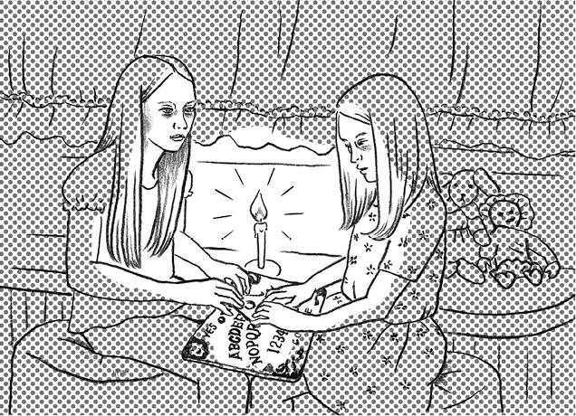
DLChapter02_04 The Ouija Board
Fifth-graders Donna and Mary were having a*1 sleepover one Friday night at Donna's house. Both of Donna's parents were out, because they worked until late, but her older sister Elise was downstairs watching TV.
They had already played some card games, some board games, and some guessing games. They were tired, but they wanted to try to*2 stay up all night.
Outside, in the distance, they heard a loud crash.
"What was that?" Mary asked.
"I don't know," Donna said. "*3 Fender bender, I guess."
"What do you want to do now?" Mary asked.
Donna thought for a minute. Then she smiled and asked, "*4 How about if we play with my*5 Ouija board?"
"What is that, exactly?" Mary asked. "I think I heard it's a scary game."
"It's not too scary," said Donna. "It's a board game with the letters of the alphabet written on it. But it's more powerful than a regular game. The idea is to try to communicate with the spirits of the dead. If we're lucky, we might get a message from someone we love who is dead."
"I don't know anybody who's dead," said Mary.
"Neither do I," said Donna. "But let's try anyway."
"How does the message come?" Mary asked.
"You put your hands on the little*6 pointer and ask the board a question. If it*7 works, your hands will start to move all by themselves. You look at the letters then, to see if they spell out words. If they do, it's a message."
"Well, it sounds scary. But OK," said Mary.
Donna said, "Wait, I just need a candle." She brought over a large candle and some matches. She lit the candle and turned off the light.
"Do you really have to turn out the lights?" Mary asked.
"Yeah, you do. That's part of the game," Donna said. The light*8 flickered and*9 played over the faces of both girls.
Donna said, "Is there anybody out there? Please communicate with us if you're there."
The pointer began to move. It spelled out the letters "M-O-M."
Donna and Mary looked at each other. Then the pointer began to move again.
It spelled out, "D-N-N-A" "L-O-V."
The girls laughed. "Well, those aren't really complete words," Donna said. "So it's not really a message."
The doorbell rang. Donna and Mary opened the door. It was a couple that lived*10 around the corner and down the street. They both looked upset.
The wife said, "Is your dad home?" Donna shook her head.
Donna's older sister came to the door then, too, and the husband began to talk all in a rush.
"We were sitting at home watching TV when we heard the most awful crashing sound. We knew right away it must be an accident. So we went outside, and there was a car that had crashed into the stone wall at the end of the road. The car was*11 totaled, and the driver wasn't moving at all. We called out over and over, but no one answered. Then my wife peered in more closely and said, 'I know her! It's Donna and Elise's mother!' The police should be getting there now. Do you want us to drive you over?"
532words
The background to "The Ouija Board"
DLMP3_10
The Ouija board is a game that was especially popular from the 1920s through the 1970s. It is used, often by teenagers, to communicate with spirits of the dead. We can still buy the game at toy shops. There are*12countless narratives of scary experiences related to use of the Ouija board, but one*13common thread seems to be that the spirits did not leave after the game was finished, and that strange and*14spooky things began to happen around the house. On occasion, a priest is even called in to*15exorcise the place!
ある金曜日の夜、小学5年生のドナとメアリーは、ドナの家でお泊まり会をしていました。ドナの両親は遅くまで仕事をしていて留守でしたが、姉のエリースは1階でテレビを見ていました。
二人はすでにトランプやボードゲーム、連想ゲームをし尽くしていました。疲れてはいましたが、徹夜してみたいと思っていたのです。
外の遠くの方から、大きな衝突音が聞こえました。
「何かしら？」とメアリーが言いました。
「分かんないけど、きっと車がぶつかったのよ」とドナは答えました。
「じゃあ、今度は何して遊びたい？」とメアリーは尋ねました。
ドナは少し考えて、にっこり笑って言いました。「ウィジャボードで遊ばない？」
「それって、正確にはどういうもの？」とメアリーは尋ねました。「怖い遊びって聞いた気がするんだけど」
「そんなに怖くないわ」とドナは答えました。「ボードゲームよ。アルファベットの文字が書いてあるの。でも、普通のゲームなんかよりずっとすごいんだから。死者の魂と交信してみようっていう遊び。運が良ければ、死んじゃった大好きな人からメッセージを受け取れるかもしれないわ」
「死んじゃった人なんて誰も知らないんだけど」とメアリーは言いました。
「私だって知らないわよ」とドナは答えました。「でも、とにかくやってみようよ」
「メッセージはどうやって来るの？」とメアリーは尋ねました。
「小さな指示器に手を乗せて、ボードに質問するの。うまくいけば、手が勝手に動き出すわ。そのとき、文字に注目して、言葉になっているかよく見るの。もし言葉になってたら、それがメッセージってことよ」
「へえ、なんだか怖そうだけど、いいよ」とメアリーは言いました。
「待って、ろうそくがいるんだった」と言って、ドナは大きなろうそくを1本とマッチを持ってきました。そして、ろうそくに火をつけると、明かりを消しました。
「本当に明かりを消さないとだめなの？」とメアリーは尋ねました。
「ええ、そうよ。そういう遊びなんだから」とドナは答えました。ろうそくの火がゆらゆら揺れて、二人の少女の顔を照らしました。
ドナは言いました。「誰かそこにいますか？ もしいたら、私たちと交信してください」
指示器が動き出しました。 "M-O-M"と文字をつづりました。
ドナとメアリーは顔を見合わせました。すると、指示器がまた動き出しました。
"D-N-N-A" "L-O-V"とつづりました。
少女たちは笑いました。「うーん、ちゃんとした言葉になっていないわ」とドナは言いました。「だから、メッセージってわけじゃないわね」
玄関のベルが鳴りました。ドナとメアリーがドアを開けると、通りを少し先に行ったところの、すぐ近所に住む夫婦がいました。二人とも動揺しているようでした。
妻の方が「パパはいる？」と尋ねました。ドナは首を横に振りました。
ドナの姉も玄関へやって来ました。すると、夫が一気に話し始めました。
「すさまじい衝突音が聞こえたとき、私たちは家で座ってテレビを見てたんだ。これは事故だってすぐ思ったよ。それで、外に出たんだ。そしたら、突き当たりの石塀に車が突っ込んでて。車は大破して、運転手はピクリとも動いていなかったよ。何度も何度も声を掛けたけど返事はなかった。それから家内が近寄って、中をのぞいて言ったんだ。『知ってるわ！ ドナとエリースのお母さんよ！』って。警察が今、現場に向かっているはずだ。私たちと一緒に乗って行くかい？」
「ウィジャボード」の背景
ウィジャボードは、特に1920年代から70年代にかけて流行したゲームです。しばしばティーンエージャーたちが、死者の霊と交信するために使います。このゲームは今でもおもちゃ屋さんで買えます。ウィジャボードがらみの怖い体験談は尽きませんが、中でも共通しているのは、交信後に霊が去らず、家の中で奇妙なことや気味の悪いことが起きるようになったというもの。司祭を呼んでおはらいしてもらうことさえあるのです！
*1 sleepover：（主に子どもの）お泊まり会
*2 stay up：徹夜する、寝ずに起きている
*3 fender bender：（自動車のフェンダーがへこむ程度の）衝突事故
*4 How about if ...?：...しようか？
*5 Ouija board：ウィジャボード。死者の魂と交信するための文字盤。アルファベット、数字、Yes / Noなどの文字が書かれている。oui はフランス語の、ja はドイツ語の「はい」に由来する
*6 pointer：指し示すもの。ここでは、ウィジャボードに書かれた文字を指し示す道具のこと
*7 work：うまくいく
*8 flicker：揺らめく
*9 play：揺らぐ、ちらつく
The Babysitter
ベビーシッター
20世紀
ある晩、ベビーシッターをすることになったシャーロット。子どもたちを寝かし付け、一息つこうとしたそのとき、電話が鳴る。電話を取ると、受話器からは低い声。「子どもたちを確認したか？」。目的の分からない電話におびえるシャーロットは、予期せぬ事件に巻き込まれる......。
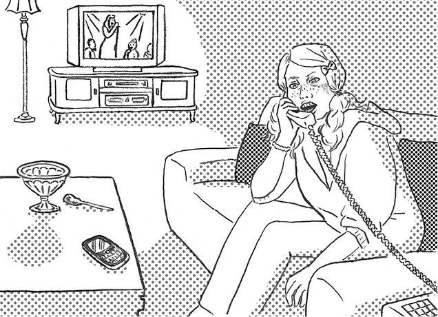
DLChapter02_05 The Babysitter
High-school*1 freshman Charlotte was spending the night babysitting for a family. She had only babysat alone at night a couple of times before, so she was a little nervous, but the parents would be back before midnight.
She put the family's three children to bed. She had just gotten some ice cream from the freezer and*2 settled down to watch TV when the phone rang. A deep voice said, "Have you checked on the children? Maybe you should."
She thought it was a little strange, but then decided it was probably just a*3 prank call. She was watching TV and*4 texting friends when the phone rang again a few minutes later.
"Have you checked the children yet?" the same deep voice demanded. "Maybe you should."
"Who is this?" the babysitter asked, but the*5 caller had already hung up.
She wondered if she should go upstairs and check on the children, but now she was starting to get scared. She didn't want to walk around through the large house. She wanted to stay downstairs, where all the lights were on.
A few minutes later, the phone rang a third time. Charlotte picked it up and whispered hello. The voice, now sounding angry, said "Check on the children!"
Charlotte hung up and called 911. The operator said, "If he calls again, we can trace the call. Keep him on the line as long as you can."
He called back again and Charlotte said, "How come you keep calling here like this? What do you want, anyway?" The caller was quiet for a moment, and said, "You want to know what I want, huh? All right. I want your blood all over me." Then he hung up.
Seconds later, the phone rang. This time it was the operator. She had succeeded in getting a trace on the call. "Get out of the house," she said. "The calls are coming from a separate telephone line, inside the house!"
Hearing heavy*6 footsteps hurrying across the bedroom floor upstairs, Charlotte raced to the front door. But in her panic she couldn't shift the lock. "Why won't this lock move?" she*7 sobbed. As the footsteps began to*8 thump down the*9 staircase, Charlotte noticed that the lock wasn't actually shut. She*10 yanked the door open and raced outside into the arms of a waiting policewoman. Other officers ran inside toward the stairs.
There they found a man*11 brandishing a*12 butcher knife. He had gotten into the house through an*13 unlocked*14 second-story window. He had murdered all three children. He had been hoping that the babysitter would soon come upstairs so that he could kill her, too.
438words
The background to "The Babysitter"
DLMP3_11
This is a*15 classic urban legend that has been made into a number of movies. In the U.S., high-school and college students are often hired to babysit when the parents go out in the evenings. Typical*16 suburban houses may be large, but they are not so large that someone downstairs wouldn't hear people being killed upstairs. This kind of freedom with detail is typical of urban legends. This story has an*17 alternate ending in which the babysitter manages to save the children, but the version we have included here is the most often told.
高校1年生のシャーロットは、ある家族のベビーシッターをしながら夜を過ごしていました。彼女は、夜一人でベビーシッターをしたことが、それまでに2、3度しかなかったので、少し緊張していました。両親は夜中の12時までに帰ることになっていました。
彼女は三人の子どもたちを寝かし付けました。冷凍庫からアイスクリームを取り出し、テレビを見ようと落ち着いたところで電話が鳴りました。低い声が言いました。「子どもたちを確認したか？ した方がいいぞ」
彼女は少し変だと思いましたが、きっとただのいたずら電話だろうと思うことにしました。彼女がテレビを見たり、友達に携帯電話でメールを送ったりしていると、数分後にまた電話が鳴りました。
「もう子どもたちを確認したか？」。さっきと同じ低い声は問いただしました。「した方がいいぞ」
「あなた誰なの？」。ベビーシッターは聞きましたが、発信者はすでに電話を切っていました。
2階に行って子どもたちを確認するべきかどうか迷いましたが、その時点で彼女は怖くなり始めていました。大きな屋敷の中を歩き回りたくありませんでした。明かりが全部ついている1階にいたかったのです。
数分後、3回目の電話が鳴りました。シャーロットは電話に出て、もしもしとささやきました。その声は、今度は怒ったように「子どもたちを確認しろ！」と言いました。
シャーロットは電話を切って911番にかけました。オペレーターは、「またかけてきたら、逆探知します。できる限り話し続けてください」と言いました。
男は再びかけてきたので、シャーロットは言いました。「こんなに何度も電話してくるなんて、どういうこと？ 一体、何が望みなのよ？」。発信者は少し黙ってから言いました。「何を望んでいるか知りたいって？ 教えてやろう。体中におまえの血を浴びたいのさ」。そして男は電話を切りました。
すぐに電話が鳴りました。今度はオペレーターでした。電話の逆探知に成功したのです。「その家から出てください」とオペレーターは言いました。「電話はその家の別の回線からかけられています！」
シャーロットは、重い足音が2階の寝室を急いで横切るのを聞いて、玄関へ急ぎました。しかし、パニック状態で鍵を開けることができませんでした。「何で鍵が開かないの？」と、シャーロットはすすり泣きながら言いました。足音がドシンドシンと階段を降り始めたそのとき、鍵が実際には掛かっていなかったと気付きました。彼女はドアをグイッと引っ張って開け、外へ走りだし、待機していた婦人警察官の腕に飛び込みました。他の警察官たちが家の中の階段に向かって走りだしました。
そこで彼らは、肉切り包丁を振り回す男を見つけました。男は鍵が掛かっていない2階の窓から家に侵入しました。男は三人の子どもたち全員を殺してしまっていました。男は、ベビーシッターも殺そうと、彼女が早く2階に来るのを待ちわびていたのでした。
「ベビーシッター」の背景
何度も映画化されている、定番の都市伝説です。アメリカでは、夜に両親が外出するとき、高校生や大学生をベビーシッターとして雇うことがよくあります。確かに郊外の典型的な家屋は大きいですが、上の階で誰かが殺されても下の人間に全く聞こえないほど大きいわけではありません。このあたりのディテールの自由さが、典型的な都市伝説とも言えるでしょう。このお話には、ベビーシッターが何とか子どもたちを助けるバージョンもありますが、本書には最もよく知られているものを収録しました。
The Split-Mouthed Woman
口裂け女
1970年代
小学３年生になったばかりの「私」は、帰宅途中に大きな白いマスクをした女の人に会う。その人は、そばにやって来て「私、きれい？」と尋ねる。唐突な問い掛けにちゅうちょしていると、彼女は同じ質問を繰り返す。「私」が「うん、きれい」と答えると......。
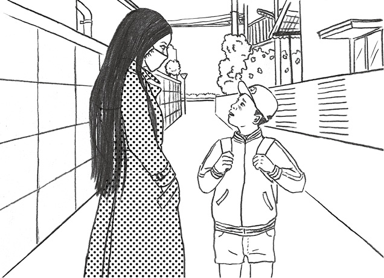
DLChapter02_06 The Split-Mouthed Woman
I remember I had just started the third grade, so it must have been 1979. I was still*1 getting used to my new teacher and classmates.
A classmate and I played for a while at a park near the school and then split up at the corner to go home. I crossed the street and turned right at a shoe store. It was a narrow street, just wide enough for a car to squeeze through. I walked along*2 humming a tune, thinking about what we might be having for dinner.
Then a woman wearing a blood-red*3 trench coat came toward me. She was tall and slender, had*4 jet black hair all the way down to her waist, and was wearing a big, white*5 surgical mask, the kind that people wear when they have a cold. Her skin was pale and her eyes were large and bright, almost like a doll's.
She came right up close to me and asked, "Do you think I'm beautiful?"
I wasn't sure how to answer a question like that from a stranger. When I hesitated, she asked again, "Do you think I'm beautiful?"
I looked at her face. I felt as if I was being drawn into her large, beautiful eyes. I answered, "Yes, you are beautiful."
And then, removing the mask that covered the lower half of her face, she asked, "How about now? Still beautiful?" Then I saw that a*6 gash was cut straight across her face, like a huge smile, from ear to ear. She said, "How would you like to look just like this?" She raised her right arm, and I saw that she was holding a knife with a*7 curved blade like a*8 hook.
*9 Terrified of*10 having my mouth slit open like hers, I turned and ran. I could hear a voice behind me calling, "Wait!" After a while I could hear her breathing heavily, and then, not much later, I could feel the*11 rush of warm air on the back of my neck each time she breathed. I could hear the*12 swish of the knife as it cut through the air. "*13 This is it!" I said to myself, and just then the shoe store on the corner caught my eye.
I ran to the shop as fast as I could. I*14 shoved open the door and rushed inside, crying, "Help! Help!"
An older woman came up and said in a very relaxed and*15 easygoing tone, "What's the matter? You seem rather*16 panicky."
I told her, "A woman with a split mouth was chasing me. Do something! Quick! She's opening the door!"
Just then, the older woman slowly pulled off her own surgical mask and said with a smile, "Do you think I'm as beautiful as my younger sister?" This woman, too, had exactly the same huge gash across her mouth from ear to ear.
Next thing I knew, I was waking up in a hospital bed. My mother and father were there, and when they saw that I was awake, they both started crying.
"You gave us*17 quite a*18 fright, fainting like that," my mother said.
517words
The background to "The Split-Mouthed Woman"
DLMP3_12
"The Split-Mouthed Woman" is a Japanese urban legend that was extremely popular in the latter half of the 1970s. There were many reports of actual sightings around the country, stirring*19 widespread fears and*20 hysteria among children. If you encounter her, it is recommended that you toss pomade at her, because she hates it, or scatterbekko candies around her, because she loves them.
小学3年生になったばかりだったと記憶しているので、1979年だったに違いありません。私は新しい先生やクラスメートに慣れつつあるところでした。
クラスメートと私は学校近くの公園でしばらく遊んでから、角のところで別れて家路に就きました。通りを渡り、靴屋で右に曲がりました。そこは狭い通りで、1台の車が何とか通れる程度の道幅でした。私は、夕食は何だろうかと考えながら、鼻歌を歌い歩いていました。
すると、血のように赤い色のトレンチコートを羽織った女の人が私の方に近づいてきました。背が高く、細くて、真っ黒な髪は腰まで伸び、風邪をひいているときに着けるような、大きな白いマスクをしていました。肌は青白く、目はまるでお人形のように大きく輝いていました。
その人は私のすぐそばにやって来ると、尋ねました。「私、きれい？」
見知らぬ人にそんな質問をされても、私はどのように答えたらいいか分かりませんでした。ぐずぐずしていると、彼女はもう一度尋ねました。「私、きれい？」
私はその人の顔を見ました。彼女の大きくて、美しい目に吸い込まれそうな感じがしました。私は「うん、きれい」と答えました。
すると、彼女は顔の下半分を覆っていたマスクを外しながら、尋ねました。「今度はどう？ これでもきれい？」。そのとき私は見てしまいました。その顔には、大きな笑みを浮かべたみたいに、耳から耳までざっくり横に切れた裂け目があったのです。女は「あんたもこんな見掛けになるのはどう？」と言うと、右腕を高くあげました。私は、女が鎌のように曲がった刃をしたナイフを持っていることに気付きました。
自分の口があの女の口のように切り裂かれてしまうという恐怖で、私はくるりと向きを変えて走りました。背後で「待て！」と叫ぶ声が聞こえました。しばらくして、女の激しい息遣いが聞こえ、間もなく、女が息をするたびに、私は首の後ろに生ぬるい風が吹き掛けられるのを感じました。ナイフが空を切って、ヒュッという音が聞こえました。「もうだめだ！」とつぶやいたその瞬間、私の目が角の靴屋をとらえました。
店までできる限り速く走りました。私は「助けて！ 助けて！」と叫びながらドアを押し開け、中へと駆け込みました。
年配の女性が出てきて、とても穏やかでのんびりした口調で「どうしたの？ ずいぶんあわてて」と言いました。
私は彼女に言いました。「口が裂けた女が追い掛けてきたんだ。何とかして！ 早く！ ドアを開けちゃう！」
そのとき、年配の女性は着けていたマスクをゆっくりと外し、笑みを浮かべて言いました。「私って、妹と同じくらいきれい？」。その女も、全く同じように耳から耳まで口が大きく裂けていました。
気が付くと、私は病院のベッドの上でした。そこには母と父がいました。私が目覚めたことを知って、二人とも泣き出しました。
「あんなふうに気絶して、私たち、本当にびっくりしたのよ」と母は言いました。
「口裂け女」の背景
「口裂け女」は、1970年代後半に大流行した日本の都市伝説です。全国各地で目撃談が語られたことにより、子どもたちの間に恐怖と興奮が広がりました。彼女に遭遇したら、苦手なポマードを投げつけたり、あるいは大好物のべっこう飴をばらまいたりすると良いと言われています。
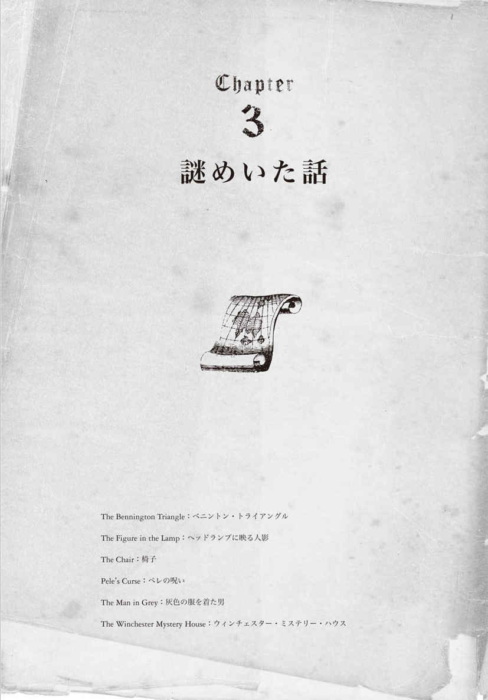
The Bennington Triangle
ベニントン・トライアングル
1940～50年代
紅葉の名所、アメリカ・バーモント州ベニントン。絵画のように美しいこの町で、1945年から不可解な事件が次々と起こる。それは決まって紅葉の美しい秋から初冬にかけてのことであった。いつしかその地域は「ベニントン・トライアングル」と呼ばれるようになる。そこで起こった不可解な事件とは......？
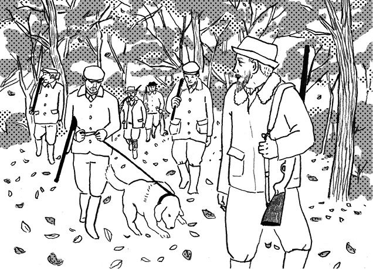
DLChapter03_01 The Bennington Triangle
There may be no better spot in the United States for viewing autumn leaves than Bennington, Vermont. It's an old and*1 picturesque small town located near the Green Mountain National Forest, and the area is beloved by skiers, hikers, and*2 leaf-peepers alike.
But the*3 scenic area of Bennington and nearby Glastenbury Mountain*4 is also steeped in mystery. Many strange events have occurred there, and always between the months of October and December.
The first was in November of 1945. 75-year-old Middie Rivers, an experienced hunter from Bennington, knew the area well. He was with a group of hunters returning to camp near*5 Long Trail Road on a mild day when he got ahead of the others and was never seen again.
A year later, on December 1, 1946, Bennington college*6 sophomore Paula Welden went for a hike alone on Long Trail --- where she was seen by several witnesses --- and never returned.
On December 1, 1949, James Tetford, who lived in Bennington, boarded a bus to return home from St. Albans, Vermont, several hours north. He was confirmed to be on the bus at the stop before Bennington, but when the bus arrived at his stop, he was missing. All of his possessions were still on the luggage*7 rack, and an open bus timetable lay on his seat.
On October 12, 1950, 8-year-old Paul Jepsen disappeared without a trace from his family farm.*8 Bloodhounds traced his scent to a spot near the highway and then lost it, suggesting that he may have been*9 abducted in a car. The spot where the dogs lost his scent was close to where Paula Welden disappeared.
Just two weeks later, on October 28, 1950, 53-year-old Frieda Langer was hiking with a cousin when she fell into a*10 creek. She told her cousin to wait while she went back to their camp to change her clothes. It was*11 broad daylight and Frieda knew the area well, but she never made it to camp and was never seen alive again.
Traditionally, Native Americans are said to have*12 shunned this same area, using it only as a*13 burial ground. They believed the area to be*14 cursed because all "four winds" met at the top of the mountains there. Native American folktales also speak of an*15 enchanted stone there that swallows anything that steps on it.
No one knows why several people disappeared around Bennington between 1945 and 1950, one after another, and always during the autumn months, or why these*16 disappearances then stopped. The area has even become known as "the Bennington Triangle" because of the sense of mystery surrounding these events.
In 2000, residents of Bennington held a celebration. The cause? It had been 50 years since anyone had disappeared.
453words
The background to "The Bennington Triangle"
DLMP3_13
This is a true story that happened in Bennington, a small town located in the Green Mountains of Vermont. There are various theories about what's behind the disappearances of people from the area, including: (1) They were sucked into a black hole, (2) They were abducted by aliens, (3) They were carried away by a monster who lived in the woods, (4) They fell victim to a*17serial killer . But all of these theories are*18speculation and none is particularly*19convincing.
アメリカで紅葉狩りを楽しむのに絶好の場所は、バーモント州のベニントンをおいて他にないかもしれません。ベニントンは、グリーンマウンテン国立森林公園に隣接した、古くて絵画のように美しい小さな町であり、スキーヤーやハイカー、そして紅葉狩りに来る人たちみんなに愛されている場所です。
しかし、ベニントンと近隣のグラステンベリー山という風光明媚な地域は、謎に包まれたところでもあるのです。そこではいくつもの不可解な事件が起こっており、それは決まって10月から12月にかけてでした。
それは、1945年の11月が最初でした。75歳のミディー・リバーズはベニントン生まれのベテランのハンターであり、地元のことに精通していました。ある天候の穏やかな日のこと、彼はロングトレイル近辺のキャンプ場に戻るハンターのグループに同行し、彼らを率いて先頭を歩いていたときに行方不明になりました。
1年後の1946年12月1日、ベニントン大学2年生のポーラ・ウェルデンは、一人でロングトレイルへハイキングに行きました。目撃者が何人もいたにもかかわらず、彼女は二度と戻ってきませんでした。
1949年12月1日、ベニントン在住のジェームズ・テットフォードは、ベニントンの北へ数時間のところにあるバーモント州セントオルバンズから帰るために、バスに乗りました。ベニントンの一つ手前の停留所では、バスの中で彼の姿が確認されています。しかし、彼の降りるバス停に着いたとき、彼の姿はありませんでした。持ち物は全て網棚に残っており、座席には開いたままのバスの時刻表が置かれていました。
1950年10月12日には、8歳のポール・ジェプセンが自宅の農場からこつぜんと姿を消しました。ブラッドハウンドが幹線道路の近くまで男の子のにおいをたどったところでにおいは途切れてしまい、車で誘拐されたのではないかとみられました。犬たちが彼のにおいを捉えられなくなった地点は、ポーラ・ウェルデンが失踪した場所の近くでした。
それからちょうど2週間後の1950年10月28日、53歳のフリーダ・ランガーはいとこと二人でハイキングをしているとき、小川に落ちました。フリーダは、キャンプ場に戻って服を着替えてくるから待っていてほしいと、いとこに言いました。真っ昼間のことであり、フリーダはその辺りをよく知っていたにもかかわらず、キャンプ場にたどり着くことはなかったのです。そして彼女は、二度と生きて人前に姿を現すことはありませんでした。
伝統的にアメリカ先住民は、埋葬地として使う以外にこの地域を避けてきたと言われます。その地域の山々の頂で「四つの風」なるものが全て交差するため、呪われた地と信じられていたのです。アメリカ先住民の民話は、踏むもの全てを吸い込んでしまうという魔の石がそこにあるとも伝えています。
なぜ、1945年から1950年の間にベニントン周辺で何人かが次々と、それも決まって秋ごろに姿を消したのか、なぜその後失踪事件がおさまったのか、誰にも分かりません。この地域は、一連の事件をめぐって謎に満ちていることから、「ベニントン・トライアングル」として、有名にすらなっています。
2000年にベニントンの住民は祝賀会を開きました。お祝いの理由ですか？ それは誰も消えることなく50年を迎えられたからです。
「ベニントン・トライアングル」の背景
バーモント州のグリーン山脈にある小さな町、ベニントンで実際に起きた話です。その地域から人々が失踪した理由として、さまざまな説が挙げられています。（1）ブラックホールに飲み込まれてしまったとする説、（2）宇宙人に誘拐されたとする説、（3）森に生息する怪物に連れ去られたとする説、（4）連続殺人犯の犠牲となったとする説。しかし、そのどれもが臆測に過ぎず、どれ一つとして説得力がありません。
The Figure in the Lamp
ヘッドランプに映る人影

19世紀
19世紀後半の英国。ある夜、ビクトリア女王を乗せた急行列車が悪天候の中をロンドンへと急いでいた。機関士は視界が悪い中、懸命に列車を走らせていたが、突然ヘッドランプに人影が浮かぶ。列車は急停止し、機関士らは事態の確認に奔走する。そこで彼らが見たものとは......？
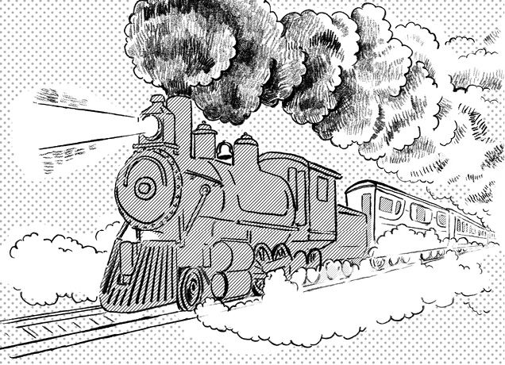
DLChapter03_02 The Figure in the Lamp
The express train hurried through the rain and fog toward London that night in the late 1880s. Its powerful headlamp was*1 no match for the thick mist that*2 swirled over the tracks. The engineer*3 was keen to arrive on time, since one of his passengers was*4 the reigning queen of England, Victoria.
The engineer*5 strained to see as far ahead as he could. Suddenly, he*6 was startled to see a dark figure, standing in the middle of the tracks and waving frantically. He*7 desperately grabbed the brake and brought the train to an*8 abrupt, screeching halt.
Relieved, he and several members of the crew climbed down to check that the train was secure. He expected the man who had flagged them down to emerge from the fog*9 at any moment. But no one did. He could see no one on the tracks, and no sign of anyone nearby. He wondered if he had hit the man, but surely he'd have seen him. He called out but could hear no answer, only the sound of fast-flowing water coming from further ahead.
So he decided to*10 set out to look for the man. He took a small*11 lantern and began walking along the tracks. He had gone less than 20 yards when he stopped and stared in horror. He could see that the middle section of the bridge that they would soon have reached had been washed completely away. Had they continued, the train would have*12 plunged into the*13 icy rushing water below.
The crew continued searching for the mysterious figure.*14 Meanwhile, the engineer began looking over the train itself. Just below the train's headlamp the engineer found a huge, dead*15 moth. He looked at it for a moment and wondered. Could this moth have been trying to bring them a message? That wasn't possible, he thought. But he decided to try placing it at the center of the lamp's glass.
He climbed back inside the cab and switched on the lamp. Suddenly, he saw a large, mysterious figure that looked like a person with arms outstretched. He was amazed. Could it really be?
The moth must have flown straight into the headlamp and been pinned there, waving its wings, just as the train*16 was about to start over the washed-out bridge. He could find no other answer to the*17 riddle.
When Queen Victoria was told about the moth that had saved the train, she said, "I'm sure it was no accident. It was God's way of protecting us." She asked two of her bodyguards to go and collect the insect.
They say that the moth is preserved*18 to this day in a safe place in a museum. It is the only moth*19 ever to save the life of a member of the royal family.
463words
The background to "The Figure in the Lamp"
DLMP3_14
This is believed to be a true story from the late 1800s, but it is not certain if the figure seen by the engineer was in fact a moth that had flown onto the lamp. The railway developed rapidly in the 19th century, and by the time this story took place, trains were capable of traveling at high speeds. However, brake systems were still fairly*20rudimentary, and it took a lot more time and effort than it does today to control and stop a train.
1880年代後半のある夜、急行列車が雨と霧の中をロンドンへと急いでいました。強力なヘッドランプでも、線路の上に渦巻く濃霧に太刀打ちすることができずにいました。乗客の一人が当時のイギリス女王のビクトリアであったため、機関士はなんとしても定刻通りに到着したいと思っていました。
機関士はできる限り遠くまで、前方を見ようと躍起になっていました。すると突然、目の前に黒い人影が現れたので、彼は飛び上がるほど驚きました。線路のど真ん中で死に物狂いで手を振っているのです。彼は必死でブレーキをつかみ、キーッと鋭い音を立てて列車を急停止させました。
機関士と乗務員ら数名は胸をなで下ろし、安全確認のため列車から降りました。機関士は、手を振って列車を止めた張本人が、霧の中からすぐ現れるものと思っていました。しかし、誰も姿を見せません。線路に人影はなく、付近に誰かいる様子もありませんでした。機関士は、その人をひいてしまったのではないかと思いました。確かに人を見たはずでした。大声で呼び掛けてみましたが返事はなく、勢いよく流れる水音がずっと先の方から聞こえるばかりでした。
そこで機関士は、その人を捜すことにしました。小さなカンテラを持ち、線路沿いに歩き始めました。彼は20ヤードも行かないうちに立ち止まり、恐怖のあまり目をむきました。もう間もなく列車が到達しようとしていた鉄橋の中央部分が、そっくり流されているではありませんか。あのまま運転を続けていたら、列車は下を流れる凍てつく奔流に突っ込んでいたことでしょう。
乗務員たちは謎の人物を捜し続けました。その一方で、機関士は列車そのものを調べ始めました。するとヘッドランプの真下に、巨大な蛾の死骸を見つけました。しばらくそれを見つめていると、ある疑問が湧いてきました。この蛾がわれわれにメッセージを伝えようとしていたなんてことがあり得るだろうか。そんなことはあり得ない、と彼は思いました。しかし、試しにその死骸を、ヘッドランプのガラスの真ん中に置いてみることにしました。
彼はよじ登って機関士室の中へ戻り、ヘッドランプのスイッチを入れました。突如、両腕を広げた人間のような怪しい大きな影が見えました。彼は仰天しました。そんなことが本当にあり得るのでしょうか？
その蛾は、ヘッドランプめがけて真っすぐ飛び込み、そこに貼り付いて羽を震わせていたに違いありません。まさに列車が、流された鉄橋の上を渡り始めようとしたそのときに。それ以外にその謎の答えを見つけようがありませんでした。
ビクトリア女王は列車を救った蛾について報告を受けたとき、こう言いました。「それは偶然ではなかったと確信しています。神様が私たちをお守りくださるためになさったことだったのです」。女王は二人の護衛兵にその昆虫を引き取りに行かせました。
その蛾は今日に至るまで、ある博物館の安全な場所に保管されているそうです。それは、かつて一人のイギリス王族の命を救った唯一の蛾なのです。
「ヘッドランプに映る人影」の背景
1800年代後半の実話だと言われていますが、機関士が見たのが本当にヘッドランプに向かって飛んできた蛾だったのかについては、定かではありません。19世紀に急激に発展した鉄道は、このころにはだいぶスピードが出るようになっていました。しかし、ブレーキシステムは理想にほど遠く、汽車を制御したり停止させたりするのに、今よりずっと手間と時間がかかりました。
The Chair
椅子
18世紀
あるパブの片隅に置かれた、アンティークの椅子。その椅子に座ったパイロットが誰一人として戦争から戻ってこないことに気付いた店主は、椅子を地下室にしまい込む。時は流れ、再びその椅子に座る人間が現れるのだった......。
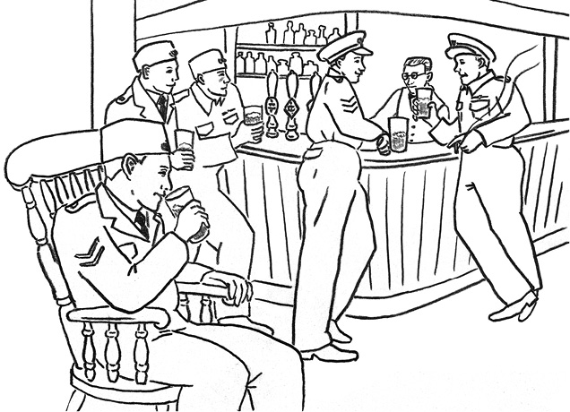
DLChapter03_03 The Chair
(Best read sitting on an antique chair)
Have a seat. That's it, sit down and make yourself comfortable. It looks like an ordinary, old-fashioned wooden chair, doesn't it? In fact, it's over 300 years old. It's a very special chair, you know. It used to belong to a pub. That's it, rest your arms on the armrests, and let me tell you some fascinating stories.
Are you the*1 superstitious type? Not really? Well, you won't mind me telling you a few tales of unfortunate*2 folk who met*3 untimely ends, will you? For instance, there were the World War II pilots who were due to fly*4 bombing raids over*5 Nazi Germany. The pilots had a custom of going to a local pub for what might be a final drink together. Indeed, after the raids, only the lucky ones returned. The pub*6 landlord began to notice that any pilot who sat in the chair in the corner of the pub never came back. He quietly*7 locked the chair away in the basement.
Years later, a middle-aged couple bought the pub. They*8 renovated the place completely and were happy to find a lovely, dusty, old chair in the basement. They cleaned it up, polished it, and put it in a cozy corner of the*9 saloon bar. The very next day, a group of hungry*10 builders came in for lunch. They sat down in the corner, had their meal, and then went back to work. That afternoon, the youngest of them was painting a ceiling. He slipped off a ladder and fell to his death. The pub's new owners knew nothing of his death, but*11 were annoyed to see the chair in the corner covered in paint. They put it back in the basement.
More years passed. A delivery man delivering barrels of beer was*12 stacking them in the pub's basement. It was hot work. He sat down for a rest. On the way to his next delivery, the vehicle he was driving left the road. It crashed into a tree,*13 instantly killing the delivery man.
After the original landlord had retired, he could never forget the chair and the terrible luck it seemed to have brought to the pilots during the war. So he had always kept an eye on the local paper for any unexplained or mysterious deaths. He knew it was no*14 coincidence that the young painter and the deliveryman had died. He told the world his story and the chair was removed and put in a museum.
It turns out that the chair in those stories was once the favorite chair of a man called Thomas Busby. He was a selfish man with a quick temper. How selfish? Well, he once got into an argument with his father-in-law, who he found sitting in his favorite chair. Busby screamed, "I'll kill anyone who sits in my chair!" Unfortunately for his father-in-law, Busby kept his promise. Busby*15 was sentenced to death and hanged for*16 strangling him.
For the last 30 years, the chair has been hanging in the museum, 5 feet above the ground so that nobody can sit in it. But I'm the curious type; I thought I'd get it down, just to prove to everyone that the*17 superstitions are all false. After all, this is the 21st century. You don't believe in all that nonsense, do you? But tell me, is the chair as comfortable as it looks?
You're not afraid, are you? Are you?
575words
The background to "The Chair"
DLMP3_15
This is a true story from North Yorkshire, England. In a pub called the Busby Stoop Inn, which closed its doors in 2012, there was an old, plain chair. Everyone who sat in this chair seemed to die soon afterward. The death count --- and these are just the confirmed deaths --- was a*18staggering*1963. The chair is now kept at the local Thirsk Museum, in a popular display called the Busby Stoop Chair.
（アンティークの椅子に腰掛けてお読みいただくことを、ぜひお勧めいたします）
どうぞお掛けください。そう、座っておくつろぎください。ごくありふれた、古い木の椅子に見えるでしょう。実はそれ、300年以上も前のものなのです。極めて特別な椅子であることがお分かりいただけるでしょう。あるパブにあったものです。そうそう、肘掛けに腕をお乗せください。それでは、私がいくつか興味深いお話をいたしましょう。
あなたは迷信を信じるタイプですか？ そうでもありませんか？では、不慮の死を遂げた、不幸な人々のお話をいくつかしてもかまわないでしょうか。例えば、第二次世界大戦中に、ナチスドイツへ空爆に向かうパイロットたちの話をね。彼らには、最後になるかもしれない酒を酌み交わしに、地元のパブに行く習慣がありました。実際、攻撃後に戻ってくるのは幸運なパイロットだけでした。パブの店主は、店の隅の椅子に座ったパイロットが誰一人として戻ってこないことに気付き始めました。店主はその椅子をそっと地下室にしまい込みました。
数年後、ある中年の夫婦がそのパブを買い取りました。夫婦はその店をすっかり改装しました。そして、地下室で古くて埃まみれのすてきな椅子を1脚見つけると、夫婦は喜びました。夫婦はその椅子をきれいにして磨き上げ、ラウンジ・バーの居心地の良い片隅に置きました。ちょうどその翌日、お腹を空かせた建設作業員の一団がランチを食べにやってきました。作業員たちは隅に陣取り、ランチを平らげ仕事へ戻っていきました。その日の午後、彼らの中で一番若い作業員が天井の塗装をしていました。その若者は、はしごから足を滑らせ、転落死してしまったのです。パブの新しいオーナー夫婦が彼の死を知る由もありませんでしたが、隅の椅子にペンキがついているのを見てむっとしました。夫婦はその椅子を地下室へ戻してしまいました。
さらに数年の月日が流れました。ビール樽の配達業者がそのパブの地下室に樽を積んでいました。それはきつい仕事でした。彼は腰を下ろして休憩しました。次の配達に向かう途中で、彼の運転する車が道路から外れてしまいました。車は木に激突し、彼は即死してしまいました。
最初の店主は店を手放した後も、その椅子と、戦争中にその椅子がもたらしたかのように思える、パイロットたちの悲惨な運命を忘れることができませんでした。それで彼は、常に地元の新聞に載った、原因不明の死や不可解な死に目を光らせていました。若い塗装職人や配達人の死が、決して偶然の一致ではないことは分かっていました。彼は世間に向けて彼の知るところを話しました。その椅子は撤去されて、博物館に置かれることになりました。
これらのお話に出てくる椅子は、かつてトーマス・バズビーという男の、お気に入りの椅子だったことが分かりました。彼は短気でわがままな男でした。どのくらいわがままだったか？ そうですね、彼はかつて自分のお気に入りの椅子に義理の父親が座っているのを見つけて、口論になりました。「俺の椅子に座るやつは誰であろうとも殺してやる！」とバズビーは叫びました。義理の父親にとっては不幸にも、バズビーはその約束を守ったのです。バズビーは死刑判決を受け、絞首刑に処されました。
ここ30年の間、その椅子は博物館につるされてきました。誰も座ることができないように、床から5フィートの高さにです。でも、私は好奇心旺盛なタイプなので、その椅子を降ろそうと考えました。皆さんにその迷信が全くのでたらめであることを証明しようと思いましてね。何だかんだ言っても、今は21世紀です。そんなナンセンス、全く信じちゃいないでしょ？ ただ、お聞きしたいんです。（あなたの座っている）その椅子、見た目通り座り心地が良いですか？
怖がってないですよね？ ねえ？
「椅子」の背景
イギリスのノースヨークシャー州であった実話です。2012年に閉店したバズビー・ストゥープ・インというパブに、何の変哲もない古い椅子がありました。この椅子に座った人は全員、その後間もなく亡くなったそうです。その数は分かっているだけでなんと63人。椅子は現在、地元のサースク博物館が保管しており、「バズビー・ストゥープの椅子」と呼ばれて、人気の展示物となっています。
Pele's Curse
ペレの呪い
古い言い伝え
「うわあ、やっと着いた！」。ハワイ島を訪れた田中さん一家は、久しぶりの海外旅行に胸を躍らせる。キラウエア火山のダイナミックな景観を楽しんだ後、一家はオアフ島に向かうが、不幸なことが立て続けに起こり始め......。
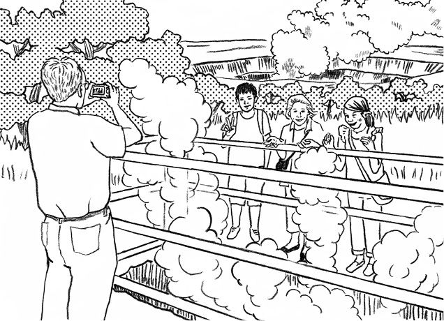
DLChapter03_04 Pele's Curse
The Tanakas went to Hawaii on vacation. They would attend a relative's wedding and then spend another week or so exploring*1 the Big Island and Oahu.
These days, they didn't have too many chances to take trips together as a family. Daughter Eri was already 20 and in college, but son Manabu was just 16 and still in high school.
They changed planes at Oahu and finally made it to the Big Island.
"Wow, it's been such a long time since we went on a real vacation as a family, especially overseas," the mother, Kazuko, said.
"We're finally here! That was a long trip," said Eri.
"Hey, everybody, I know we've got the wedding tomorrow, but sometime in the next couple of days, I'd like to go to the Hawaii*2 Volcanoes National Park and see Kilauea Volcano," Kazuko said. "What do you guys think?"
"Sounds good to me," said Eri. "I heard that Kilauea is one of the most active volcanoes in the world. Hope it doesn't*3 erupt on us!"
The family took a shuttle bus from the airport to their hotel. While they were still waiting to check in, Eri happened to see a poster in the lobby.
The poster showed a picture of Kilauea Volcano and read, "Visitors are strictly*4 prohibited from taking*5 lava rocks out of the Hawaii Volcanoes National Park."
"Hey Dad, look, here's a poster about the volcanoes park. It says visitors shouldn't pick up any lava rocks and take them home."
"Sure, that sounds reasonable," said her father, Yukio.
"Listen, we can't take any lava rocks from here, OK? Seriously," Eri told her mother and brother. "All right, all right," said Manabu halfheartedly.
They attended the wedding the next day, then, two days later, set off after breakfast for the Hawaii Volcanoes National Park.
Here and there in the park were steam*6 vents, with*7 vapor rising from them. A*8 park ranger said that coming into direct contact with the steam could make visitors beautiful. Kazuko and Eri laughed and tried to pull*9 armfuls of the mist toward their own faces. Meanwhile, thick smoke*10 billowed from the crater where Pele, the goddess of volcanoes, was said to live. The Tanakas were*11 overwhelmed by the beauty of the scenery that surrounded them.
They checked out of their hotel the next morning and were planning to start for Oahu, where they would spend a few days. But things started to happen. The shuttle bus to Kona International Airport was having technical troubles, and they needed to wait two hours for the next one. So they missed their flight and had to wait for a later one.
They finally made it to Oahu, but, one after another, their troubles kept coming. They would all be happy to get this stressful vacation over with. Then, as they walked toward the front desk to check out of the hotel, Kazuko let out a scream as she tripped on the carpet and*12 stumbled to the floor,*13 painfully*14 spraining her ankle. "What's going on?" cried Eri. "First, Manabu comes down with a fever and has to*15 be hospitalized. Then, Dad was nearly hit by a car. I've lost my wallet. And now this!"
The manager standing at the front desk rushed over to make sure Kazuko was all right. And then he turned to Eri, "I'm sorry, madam, but I couldn't help*16 overhearing you a moment ago. I don't mean to be*17 suspicious, but you haven't done anything to upset Pele, have you?"
"Pele? Who's Pele?" asked Eri.
The manager replied, "I mean, none of you have taken any lava rocks, have you?"
"Well, actually ..." Kazuko dug around in her bag and pulled out a rock the size of a child's fist.
"What? Mom!*18 Why on earth? I even told you not to, back when we first got to the hotel," said Eri.
"I thought it would make a nice souvenir. Maybe I shouldn't have."
The manager continued, "Hawaiians traditionally believe that the goddess of volcanoes and fire, Pele, lives deep within the Halemaumau crater at the summit caldera of Kilauea Volcano. Pele considers herself a mother and the lava rocks her children. She is*19 fiercely*20 protective of them. Anyone who takes a lava rock from anywhere on the island of Hawaii will feel the force of her anger. I suggest that you mail the lava rock back to the Hawaii Volcanoes National Park. Let me give you the address."
Kazuko went to the post office right away and did as he had said. Soon Manabu had completely recovered, and Eri found her wallet. That must have been it, Eri thought to herself: the*21 curse of Pele.
775words
The background to "Pele's Curse"
DLMP3_16
Do you believe in the curse of Pele? Search the Internet and you will find countless stories of people who have met with a series of*22misfortunes, such as illness,*23unemployment, and bad luck in business, after*24carelessly taking a lava stone home from the Big Island. Most of them later returned the stone to the Hawaii Volcanoes National Park. There are other places, too, such as Kudaka Island in Okinawa, that prohibit people from taking natural objects, such as sand, stones, shells, and leaves, home with them. This legend argues for the importance of respecting this kind of rule.
田中さん一家は、休暇でハワイに行きました。一家は親戚の結婚式に出席した後、さらに1週間ほどハワイ島とオアフ島を見て回るつもりでした。
このところ一家そろって旅行に行く機会があまりありませんでした。娘の絵里はすでに20歳の大学生でしたが、息子の学は16歳になったところで、まだ高校生でした。
一家はオアフ島で飛行機を乗り換え、やっとハワイ島に着きました。
「うわあ、家族で本格的な休暇に出掛けるなんて久しぶりね。特に海外なんて」と母親の和子が言いました。
「やっと着いた！ 長旅だったね」と絵里が言いました。
「ねえみんな、明日は結婚式だけど、その後2、3日のうちにハワイ火山国立公園に行って、キラウエア火山を見たいんだけど」と和子が言いました。「みんなはどう思う？」
「いいんじゃない」と絵里が言いました。「キラウエアは、世界でも有数の活火山らしいよ。私たちの上に噴火してこないといいけどね！」
一家はシャトルバスに乗って、空港からホテルに移動しました。チェックインを待っている間に、絵里はロビーで偶然1枚のポスターを目にしました。
そのポスターにはキラウエア火山の写真が載っていて、次のように書かれていました。「観光客の皆さんが溶岩をハワイ火山国立公園から持ち出すことは、固く禁じられています」
「お父さん、見て。こっちに火山公園のポスターがあるの。観光客が溶岩を拾って家に持ち帰っちゃダメって書いてある」
「ま、それが筋だろうな」と父親の幸雄が言いました。
「聞いて。火山公園から溶岩を一つも持ち帰っちゃダメよ。分かった？ 真面目に言ってるんだからね」と絵里は母親や弟に向かって言いました。「はい、はい」と学が生返事をしました。
翌日、一家は結婚式に出席しました。その2日後、朝食を済ませてから、ハワイ火山国立公園に向かって出発しました。
公園のあちこちにスチーム・ベントがあり、そこから蒸気が立ち上っていました。ある公園管理のスタッフが、蒸気に直接当たると美しくなれると言いました。和子と絵里は笑って、腕いっぱいの蒸気を、自分たちの顔の方へ引き寄せようとしました。その間、煙がもうもうと、火口から立ち上っていました。それは火山の女神、ペレが住むと言われている火口からでした。田中さん一家は周りの景色の美しさに圧倒されました。
翌朝、一家はホテルをチェックアウトしたらオアフ島に向かい、そこで数日を過ごす予定でした。しかし、おかしなことが起こり始めました。コナ国際空港行きのシャトルバスが故障して、一家は次のバスを2時間も待つことになったのです。その結果、一家は予定の飛行機に乗れず、後の便まで待たなければならなくなりました。
一家はやっとオアフ島に着きましたが、次から次へとトラブルが続きました。みんな、このいまいましい休暇がさっさと終わってくれればいいのにと思っていました。そして、一家がホテルをチェックアウトしようとフロントへ向かって歩いているとき、和子が悲鳴を上げました。カーペットにつまずいて床によろめき、足首をひどい具合に捻挫してしまったのです。「どうなってるの？」と絵里が叫びました。「まず、学が熱を出して入院しなきゃならなくなって、次はお父さんが車にひかれそうになるし、私はお財布なくすし、そして、今度はお母さんよ！」
和子の身を案じて、フロントに立っていたホテルの支配人が駆け寄ってきました。そして、絵里の方を向いて言いました。「お嬢さん、失礼ですが、つい先ほどあなたのお話が耳に入ってしまいました。疑うわけではないのですが、ペレを怒らせるようなことは何もしていないですよね？」
「ペレ？ ペレって誰のことですか？」と絵里は尋ねました。
支配人が答えました。「つまり、誰も溶岩を持ってきてはいないですよね？」
「あのう、実は......」。和子はかばんの中をひっかき回して、子どもの拳ほどの大きさの石を取り出しました。
「何ですって？ お母さん！ 一体何で？ 最初にホテルに着いたあのときに、私、ダメって言ったのに」と絵里は言いました。
「いいお土産になると思ったのよ。やっぱりやめておくべきだったわね」
支配人は続けて言いました。「ハワイの人たちは昔から信じているのです。火山と火の女神であるペレが、キラウエア火山の頂上のカルデラにあるハレマウマウ火口の奥深くに住んでいると。ペレは自らを母親、そして溶岩を自分の子どもたちと考えています。彼女は子どもたちを必死で守ろうとしています。ハワイ島のどこからでも、溶岩を持ち出す者は皆、彼女の逆鱗に触れるのです。ハワイ火山国立公園にその溶岩を送り返すことをお勧めします。住所をお教えしましょう」
和子は、直ちに郵便局に行って言われた通りにしました。間もなく学は完全に回復し、絵里の財布が見つかりました。「きっとそうだったに違いないわ」と絵里はひそかに思ったのでした。「ペレの呪いよ」
「ペレの呪い」の背景
あなたはペレの呪いを信じますか？ インターネットで検索すると、軽い気持ちでハワイ島から溶岩を持ち帰って以来、病気や失業、事業不振など、悪いことが立て続けに起こったという体験談が数え切れないほど出てきます。ほとんどの人が後でハワイ火山国立公園に溶岩を返却しています。他にも、沖縄の久高島など、砂や石、貝殻や葉っぱといった自然物を持ち帰ることを禁じている場所があります。この伝説は、こういった決まりを尊重することの重要性を説いています。
*1 the Big Island：ハワイ島の別称
*2 volcano：火山
*3 erupt：噴火する
*4 prohibit：禁じる
*5 lava：溶岩
*6 vent：通気口、排出口、ベント
*7 vapor：蒸気
*8 park ranger：公園管理者
*9 an armful of ...：一抱えの...
*10 billow：大波のようにうねる
*11 overwhelm：...を圧倒する
*12 stumble：よろめく、つまずく
*13 painfully：ひどく
*14 sprain：...を捻挫する
*15 be hospitalized：入院する
*16 overhear：...をふと耳にする
*17 suspicious：疑い深い
*18 Why on earth?：一体どうして？
*19 fiercely：激しく、猛烈に
*20 protective of ...：...を守る
*21 curse：呪い
*22 misfortune：不運、災難
*23 unemployment：失業
*24 carelessly：うっかりして
The Man in Grey
灰色の服を着た男
19世紀
ある日の午後、ロンドンの劇場シアターロイヤルでは、ミュージカルのリハーサルが行われていた。俳優のウィリアムは、劇場の片隅で灰色のマントをまとった奇妙な男が自分たちをじっと見ているのに気付く。その男はまるで18世紀から抜け出してきたような格好をしていた。彼は何者なのか......？
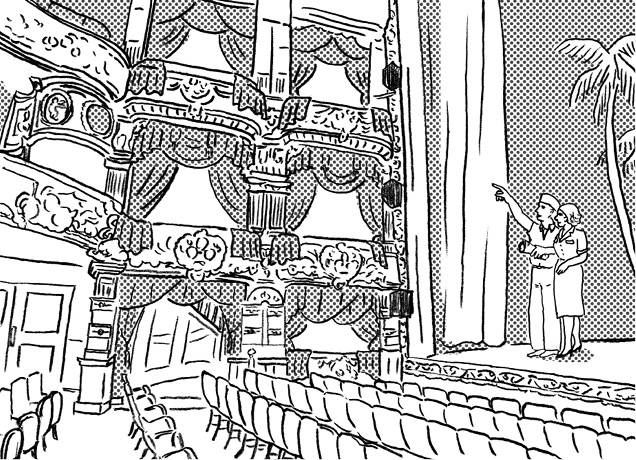
DLChapter03_05 The Man in Grey
In Drury Lane in Covent Garden, London, stands an old theater called*1 the Theatre Royal. It is one of the most historical theaters in London. The current structure was built in 1812. In more recent times, it has hosted a number of*2 acclaimed musicals, such as "*3 The King and I" and "*4 Miss Saigon." However, the Theatre Royal is well-known for another, completely different reason.
One afternoon, a rehearsal for a musical was taking place in the Theatre Royal. Backstage, the wardrobe and*5 prop staff were rushing about. The music was*6 blasting from the*7 orchestra pit just as it would for a real performance. The actors and actresses moved about, singing, in the bright spotlights, while the director, sitting in the middle of the rows of empty theater seats, shouted out his directions.
"Fifteen-minute break!"
As the actors came offstage, William, a supporting actor, said to himself, "That was*8 weird." Emily, one of the main actresses, turned to him.
"What's wrong?"
"Well, who was that man sitting in the seats in that odd*9 outfit?"
"You mean Jack, the director?"
"No, not him. The other one, dressed in those old clothes, like a*10 highwayman, or someone from the 18th century."
"The 18th century?"
"Yes, he was wearing a white*11 ruffled shirt beneath a light- gray*12 cloak. And he also had on a*13 three-cornered hat over a long*14 powdered wig. He was really quite handsome."
"Wow, he sounds very*15 dashing. Where was he sitting, exactly?"
"He was sitting in the*16 upper circle, in the last seat of the fourth row, next to the*17 aisle. He was watching us*18 rehearse with a smile on his face, until the call for the break."
"Where did he go?"
"I don't know. He was gone when I looked again."
"It must have been an actor from one of the other theaters nearby, dressed in his stage clothes," suggested Emily.
"The person you saw was*19 the Man in Grey," someone interrupted. It was the voice of Tom, a veteran prop man who had been working at the theater for 50 years. He knew everything there was to know about the theater.
"Don't tell me you're rehearsing here and you don't even know about the Man in Grey. If he appeared, this musical is guaranteed to be a big hit. That's an excellent*20 omen. The Man in Grey was murdered in a*21 crime of passion. Now, he always appears when he sees a production he likes."
"You're saying William saw a ghost? Seriously?"*22 exclaimed Emily.
"I swear I saw him! So, it was the Man in Grey. I must tell the director at once!"
William rushed off to find the director. "Jack," he said, "I have great news! The Man in Grey has been watching us!"
A week later, with rehearsals finished, their musical opened. Just as Tom had*23 predicted, it was a success from day one, with tickets continuing to sell out every day. William received good reviews from some highly respected*24 critics. The musical launched his career, and he went on to become one of the stars of*25 the West End.
513words
The background to "The Man in Grey"
DLMP3_17
If asked who is the best-known of London's ghosts, many people will name the Man in Grey. The Theatre Royal is home to two or three other friendly ghosts as well, but the Man in Grey is particularly welcomed by theater people, since he is considered a sign of good luck. When the theater was renovated in the 1870s, the*26skeleton of a young man was discovered with a knife between the*27ribs. The body was surrounded by*28tatters of gray cloth, and it is thought that his spirit went on to become the Man in Grey.
ロンドンのコベントガーデン地区にあるドルリーレーンには、シアターロイヤルと呼ばれる古い劇場があります。それはロンドンで最も歴史のある劇場の一つです。現在の建物は1812年に建てられたものです。もっと最近では、『王様と私』や『ミス・サイゴン』など、高い評価を得た多くのミュージカルを上演しています。しかし、シアターロイヤルはもう一つの全く異なった理由でも有名なのです。
ある日の午後、シアターロイヤルではミュージカルのリハーサルが行われていました。舞台裏では衣装係や小道具係が駆け回っていました。オーケストラ・ピットからは、本番さながらに音楽が鳴り響いていました。男優や女優たちは明るいスポットライトの下で歌いながら動き回り、監督は人のいない観客席の中央の列に座って、大声で指示を出していました。
「15分休憩！」
俳優たちが舞台裏に下がるとき、脇役俳優のウィリアムは「おかしいな」とつぶやきました。主役級の女優の一人であるエミリーが、彼の方を向きました。
「どうかしたの？」
「いや、あの変な格好をして観客席に座っていた男は誰かな、と思ってさ」
「監督のジャックのこと？」
「彼じゃないよ。もう一人の方さ。追いはぎか何なんだか、18世紀の人間みたいな古くさい服を着た人だよ」
「18世紀ですって？」
「そうさ。明るい灰色のマントの下に、フリルつきの白シャツを着ていたんだから。それから、髪粉を振り掛けた長髪のかつらの上に、三角帽子までかぶってたよ。かなりのハンサムだった」
「まあ、ずいぶんおしゃれな人のようね。その人、正確にはどこに座っていたの？」
「3階桟敷の4列目の端っこの席だよ、通路脇のね。休憩の声がかかるまで、僕たちがリハーサルするのをニコニコしながらじっと見てたんだ」
「彼はどこへ行ったのかしら？」
「分からない。僕がもう一度見たときには、もういなかったからね」
「近くの別の劇場から来た俳優さんよ、それ。舞台衣装を着てたのよ」とエミリーが言いました。
「あなたが見たのは『灰色の服を着た男』ですよ」と誰かが口を挟みました。それはトムの声でした。その劇場で50年働いているベテランの小道具係です。トムはその劇場について知るべきことは何でも知っていました。
「この劇場でリハーサルをするのに、まさか『灰色の服を着た男』のことを知らないとは言わせませんよ。あの男が現れたからには、このミュージカルは大ヒット間違いなしです。とても縁起がいいですね。『灰色の服を着た男』は痴情沙汰で殺されました。彼は自分の気に入った作品を見つけると、必ず姿を現すんです」
「ウィリアムが幽霊を見たって言うの？ 本気で？」とエミリーは叫びました。
「誓って言うけど、僕は彼を見たんだ！ じゃあ、あれは『灰色の服を着た男』だったのか。すぐに監督に伝えなきゃ！」
ウィリアムは急いで監督を探しに行きました。「ジャック！」とウィリアムは言いました。「すごいニュースです！ 『灰色の服を着た男』が僕たちを見ていたんです！」
1週間後リハーサルは終わり、彼らのミュージカルが開幕しました。トムが予測した通り、その公演は初日から盛況で、チケットは毎日完売し続けました。ウィリアムは何人かの名高い批評家から良い評価を受けました。そのミュージカルが出世作となり、彼はウェストエンドのスターの一人にまでなりました。
「灰色の服を着た男」の背景
ロンドンで最も有名な幽霊を尋ねれば、「灰色の服を着た男」を挙げる人が多いでしょう。シアターロイヤルには、他にも2、3人友好的な幽霊がいるそうですが、「灰色の服を着た男」は特に、幸運のしるしとして劇場関係者に歓迎されています。1870年代にこの劇場を改装したときに、胸にナイフが刺さった若い男性の白骨遺体が見つかりました。ぼろぼろになった灰色の布にくるまれていたことから、この人物の魂が「灰色の服を着た男」になったのではないかと見られています。
*1 the Theatre Royal：シアターロイヤル。「ロイヤル劇場」の意味。Theatre（劇場）はイギリス式のつづり。イギリス最古の劇場で1663年に設立。現在の建物は1812年に建設されたもの
*2 acclaimed：称賛された
*3 "The King and I"：『王様と私』。シアターロイヤルでは1953年に初演
*4 "Miss Saigon"：『ミス・サイゴン』。シアターロイヤルで1989年に初演
*5 prop：小道具
*6 blast：大きな音を鳴らす
*7 orchestra pit：オーケストラ・ピット
*8 weird：変な、奇妙な
*9 outfit ：服装、一そろいの服
*10 highwayman：（昔、馬に乗って公道に出没した）追いはぎ
*11 ruffled：フリルのついた
*12 cloak：マント、外套
*13 three-cornered hat：三角帽子。つばの両脇と後ろを折り返している帽子で、上から見ると三角形をしている
*14 powdered wig：髪粉を振り掛けたかつら。18世紀ごろ、小麦粉などの白い粉を混ぜ合わせた髪粉をかつらに振り掛けていた
*15 dashing：しゃれた、さっそうとした
*16 upper circle：3階桟敷。劇場上部で料金の安い席があるブロック
*17 aisle：通路
*18 rehearse：リハーサルをする
*19 the Man in Grey：灰色の服を着た男。grey（灰色の）はイギリス式のつづり
*20 omen：前兆
*21 crime of passion：痴情による犯罪
*22 exclaim：叫ぶ
*23 predict：...を予測する
*24 critic：批評家
*25 the West End：ウェストエンド。ロンドンの中央部西側のエリアで、ニューヨークのブロードウェーに並ぶ劇場街
*26 skeleton：骸骨
*27 rib：あばら骨
*28 tatter：ぼろ切れ、ぼろ布
The Winchester Mystery House
ウィンチェスター・ミステリー・ハウス
20世紀
夫の死後、莫大な財産を手に入れたサラだったが、その財産はたくさんの人命を奪った結果、得ることができたものだった。次々と不幸な出来事がサラを襲う。霊媒師に救いを求めたサラは、その助言に従ってある行動に出るが......。
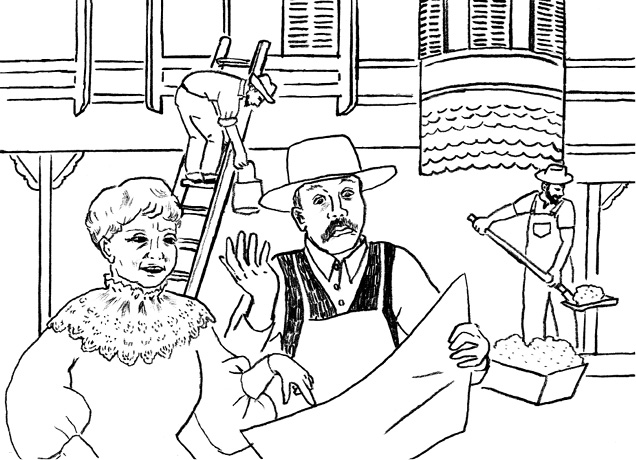
DLChapter03_06 The Winchester Mystery House
With its 160 rooms and seven floors, the Winchester Mystery House in San Jose, California, is among the largest single-family homes in the United States. There's little doubt that it's also one of the strangest. And many people say it's*1 haunted --- if not by ghosts, then at least by the grief that inspired it to be built. The story begins on the other side of the country.
William Wirt Winchester of New Haven, Connecticut, was*2 heir to the Winchester fortune, earned from his father's company's manufacture of rifles with an innovative design. Winchester rifles were repeating rifles, or guns that could be*3 fired several times without reloading. They became very popular with*4 Union troops during*5 the Civil War, winning the company huge contracts and allowing the family to*6 amass an enormous fortune.
In 1866, William's wife, Sarah, had their first and only child, a girl named Annie. Annie contracted an illness and died within a month. This turn of events drove Sarah to the edge of*7 insanity. She had begun to recover when tragedy struck again. In 1880, William's father died and left everything to William. Then, just a year later, William died of*8 tuberculosis. William left the entire family fortune to Sarah.
*9 Inconsolable over the loss of her daughter and husband, Sarah went to visit a*10 medium for advice. The medium told Sarah, "The angry spirits of all the men ever killed with Winchester rifles are now out for revenge. There's a curse on the family. The spirits killed your husband and your daughter."
Sarah asked, "What can I do to break the curse?"
The medium told her, "The only way you can avoid becoming the spirits' next victim is to start building a house, and keep on building it day and night, without ever stopping."
Sarah took the medium's advice and moved west, buying a house in San Jose that was still under construction as well as 162 acres of land around it. She immediately took charge of the construction and began to keep a staff of 22 craftsmen busy 24 hours a day, seven days a week.
She had no*11 blueprints, but she did have a*12 flair for design. She met with her construction*13 foreman every morning and showed him her sketches and ideas for that day's work. Many design elements are unusual,*14 to say the least. The house features staircases that continue all the way up to the ceiling. It has doors on upper floors that open onto*15 thin air,*16 skylights in floors, stair posts*17 installed upside down, and chimneys that do not reach the roof.
Sarah*18 was intrigued by superstition and the number 13, which she repeated throughout the house. Many windows had 13*19 panes. An imported chandelier was*20 modified to hold 13 candles. The*21 greenhouse had 13*22 cupolas. All the*23 stairways except one had 13 steps.
For most of her years, Sarah Winchester lived alone in the huge house with only servants for company. Servants have said that her only visitors were spirits. Every night at midnight, a bell*24 summoned the spirits to a*25 séance. Every morning at 2 a.m, another bell showed them out again.
Even the most powerful of ordinary human guests was apparently not welcome. In 1903, Theodore Roosevelt, then president of the United States, passed through town and called at the*26 mansion, but he was turned away with the message that "the house was not open to strangers."
Construction work continued day and night until 1922, when Sarah Winchester died in her bed at age 82. It is said that when the tired and*27 disgruntled carpenters heard the news of her death, they stopped work with nails hammered in only halfway.
Today, the Winchester Mystery House is open to visitors as a tourist attraction. All but four and a half acres of the original land has been sold off, but the building has been*28 designated a California*29 Historical Landmark, and the city of San Jose has grown up around it.
Over the years since Sarah Winchester's death, a variety of strange*30 phenomena have been reported, including chains rattling, footsteps in empty rooms, cold spots, and whispers.
Every Friday the 13th, there is a special evening tour by candlelight, which, the box office assures us, always sells out. No doubt visitors hope to*31 catch a glimpse of Sarah as they round a corner of the*32 dimly lit*33 maze that stands as a*34 reminder of both the strength and the*35 frailty of the human mind.
743words
The background to "The Winchester Mystery House"
DLMP3_18
The Winchester Mystery House is located in the heart of San Jose, the largest city in Silicon Valley. Open to the general public, the house makes a good tourist attraction for families visiting the San Francisco Bay Area. The house has inspired many stories and movies, and in 2012, a plan to make a film about the life of Sarah, the designer and owner, was announced. There are plans to open a hotel and a full restaurant on the site in the near future.
カリフォルニア州サンノゼにあるウィンチェスター・ミステリー・ハウスは、160の部屋と7階建てという、アメリカでも最大級の一戸建て住宅の一つです。それが最も奇妙な家の一つであることは、ほとんど疑いようがありません。そしてそこは幽霊がよく出ると、多くの人が言っています。幽霊によるものではないと言うなら、少なくともそれを建てる気持ちにさせた深い悲しみによるものでしょう。この物語は、国の反対側で始まりました。
コネチカット州ニューヘイブンのウィリアム・ワート・ウィンチェスターは、ウィンチェスター家の財産の相続人でした。その財産は、父親の会社が革新的な構造のライフル銃を製造することで築いたものでした。ウィンチェスターライフル銃は連発銃、つまり、弾丸を込め直さなくても数発撃つことのできる銃でした。その銃は南北戦争の間、北軍で非常にもてはやされ、会社は莫大な契約を得ました。そして、一家は巨万の富を築くことができたのです。
1866年、ウィリアムの妻サラは、夫妻の第一子でたった一人の子ども、アニーという名前の女の子を授かりました。アニーは病気にかかり、1カ月もたたずに亡くなりました。こういった事の成り行きで、サラは狂気のふちにまで追い詰められました。彼女が回復し始めたころ、再び悲劇が襲いました。1880年にウィリアムの父が亡くなり、ウィリアムに全てを残しました。それからちょうど1年後、ウィリアムは肺結核で亡くなりました。ウィリアムはサラに一族の全財産を残しました。
娘と夫を失って打ちのめされたサラは、助言を求めて霊媒師を訪ねました。霊媒師はサラに言いました。「これまでにウィンチェスターライフル銃で殺された、全ての人たちの怒れる霊魂が、今、復讐しようとしている。一族には呪いがかけられている。その霊たちがあなたの夫と娘を殺したのだ」
「呪いを断つためには何をしたらいいのでしょうか？」。サラは尋ねました。
霊媒師は言いました。「あなたが霊たちの次の犠牲者にならないようにする唯一の方法は、家を建て始めることです。昼も夜も建て続けなさい。決して中断してはなりません」
サラは霊媒師の助言を受けて西部へ引っ越し、周囲の162エーカーの土地とともに、まだ建築中だったサンノゼの家を購入しました。彼女はすぐに建築の指揮をとって、1日24時間、週7日、22人の職人たちを働かせ始めました。
彼女には設計図はありませんでしたが、設計の才能がありました。彼女は毎朝、現場監督に会って、その日の作業のために、概略図とアイデアを示しました。設計要素の多くは、控えめに言っても普通ではありませんでした。その家は、天井までずっと続く階段が特徴的です。どこにも通じていない上階のドアや、床の天窓、逆さまに取り付けられた階段の柱、そして屋根に届いていない煙突もあります。
サラは迷信と13という数字に興味をそそられ、家中のあちこちに取り入れました。多くの窓には13枚の窓ガラスがありました。輸入物のシャンデリアは、13本のろうそくを立てられるように作り変えられました。温室には13の丸屋根がありました。階段は1カ所を除いて全て13段でした。
サラ・ウィンチェスターは、その生涯のほとんどを、付き合い程度だけの使用人と、巨大な屋敷で孤独に暮らしました。使用人は、サラの唯一の来客は霊たちだったと話しています。毎晩夜中になると、ベルで霊たちを降霊会に召集し、明け方の午前2時にもう1度ベルを鳴らし、霊たちを解散させました。
生きている人間の中で最も権力のある客でさえ、どうやらあまり歓迎されなかったようでした。1903年、当時のアメリカ合衆国大統領、セオドア・ルーズベルトは、町を通る際にその屋敷を訪問しましたが、「見知らぬ人に公開していない」というメッセージで追い返されました。
サラ・ウィンチェスターが自分のベッドにて、1922年に82歳で亡くなるまで、建設工事は日夜続きました。うんざりして不満を抱いていた大工たちは、サラの死の知らせを聞くと、くぎを途中まで打ち込んだままで、作業を中止したそうです。
今日、ウィンチェスター・ミステリー・ハウスは観光名所として旅行者に公開されています。元の土地の4.5エーカーを残してそれ以外は売却されましたが、建物はカリフォルニア州の歴史的建造物に指定され、サンノゼ市はその建物を中心に発展しました。
サラ・ウィンチェスターの死から何年にもわたって、さまざまな奇妙な現象が報告されています。鎖のジャラジャラという音や、誰もいない部屋での足音、冷気ただよう場所、ささやき声など。
13日の金曜日には、ろうそくの明かりの中で行われる特別な夜間ツアーがあります。チケット売り場によれば、いつも売り切れ必至だそうです。おそらく来館者は、人間の心の強さともろさの象徴として存在する薄暗く照らされたこの迷宮の角を曲がったとき、サラを一目見たいと思っているはずです。
「ウィンチェスター・ミステリー・ハウス」の背景
シリコンバレー最大の都市であるサンノゼ市の中心地にある、ウィンチェスター・ミステリー・ハウス。その屋敷は一般公開されており、サンフランシスコ・ベイエリアを訪れる家族向けの観光名所になっています。この家は、さまざまな文学や映像作品にインスピレーションを与えてきましたが、設計者であり家主でもあるサラの物語を映画化する計画が、2012年に発表されました。また、近い将来、ホテルとフルサービスのレストランを敷地内にオープンする予定があるそうです。
*1 haunted：幽霊のよく出る
*2 heir to ...：...の相続人
*3 fire：...を発砲する
*4 Union troops：（アメリカの南北戦争での）北軍
*5 the Civil War：南北戦争（1861-65年）。アメリカ合衆国（北軍）とアメリカ連合国（南軍）の間の戦争
*6 amass：（財産を）蓄積する
*7 insanity：狂気
*8 tuberculosis：肺結核
*9 inconsolable：ひどく落胆した
*10 medium：霊媒師
*11 blueprint：青写真、設計図
*12 flair：才能
*13 foreman：管理者、現場監督
*14 to say the least：控えめに言っても
*15 thin air：何もない場所
*16 skylight：天窓、明かりとり
*17 install：...を取り付ける
*18 be intrigued by ...：...に興味をそそられる
*19 pane：窓ガラス
*20 modify：...を変更する
*21 greenhouse：温室
*22 cupola：丸屋根、ドーム
*23 stairway：階段
*24 summon：...を呼び寄せる
*25 séance：降霊会
*26 mansion：館、屋敷
*27 disgruntled：不満のある
*28 designate：...を指定する
*29 Historical Landmark：歴史的建造物
*30 phenomena：現象、出来事。単数形はphenomenon
*31 catch a glimpse：一目見る
*32 dimly：薄暗く
*33 maze：迷宮
*34 reminder：思い出させるもの
*35 frailty：弱さ、もろさ
どんどん読める 背筋がひんやり
英語でゾクゾクする ちょっと怖い話（電子書籍版）
発行日：2014年7月1日（Ver.1.0）
企画：株式会社アルク 英語出版編集部 ちょっと怖い話製作委員会
収録英文リサーチ、英文作成協力：佐々木順子
英文作成：Elizabeth Floyd Mair、Peter Branscombe
英文校正：Peter Branscombe、Margaret Stalker
表紙デザイン：岡 優太郎（synchro design tokyo）
イラスト：倉永和恵
ナレーション：Jack Merluzzi、Rachel Walzer、Howard Colefield
録音・編集：株式会社メディアスタイリスト
電子書籍制作：株式会社ジェイ エスキューブ
発行者：平本照麿
発行所：株式会社アルク
〒168-8611 東京都杉並区永福2-54-12
Email：csss@alc.co.jp
Website：http://www.alc.co.jp/
・本書は「英語でゾクゾクする ちょっと怖い話」（2014年発行）の電子書籍版です。
・本書の全部または一部の無断転載を禁じます。著作権法上で認められた場合を除いて、本書からのコピーを禁じます。
(C)2014 Kazue Kuranaga / ALC PRESS INC.
PC：9580291
ISBN：9784757423336